본 포스트는 University of Amsterdam의 Mátyás Schubert, Radboud University Nijmegen의 Tom Claassen, Saarland University 및 University of Amsterdam의 Sara Magliacane이 발표한 AISTATS 2026 논문 Local Causal Discovery for Statistically Efficient Causal Inference (arXiv:2510.14582v2, PMLR Volume 300)를 바탕으로, 인과 발견(causal discovery)의 기본기를 갖춘 독자가 논리적 흐름을 처음부터 따라갈 수 있도록 재구성한 것입니다. 본문 · 부록 · 증명 · 절제 실험을 모두 포함하며, 저자들의 구현은 https://github.com/matyasch/load에 공개되어 있습니다.
논문 정보 (Paper Information)
- 제목: Local Causal Discovery for Statistically Efficient Causal Inference
- 저자: Mátyás Schubert, Tom Claassen, Sara Magliacane
- 소속: University of Amsterdam / Radboud University Nijmegen / Saarland University & University of Amsterdam
- 출처: Proceedings of the 29th International Conference on Artificial Intelligence and Statistics (AISTATS) 2026, Tangier, Morocco. PMLR: Volume 300. arXiv:2510.14582v2 [stat.ML], 2026년 3월 31일
- 키워드: 국소 인과 발견(local causal discovery), 최적 조정집합(optimal adjustment set), CPDAG, 금지 사영(forbidden projection), 순응성(amenability), 마르코프 블랭킷(Markov blanket), 건전성(soundness)/완전성(completeness)
- 코드: https://github.com/matyasch/load
한 줄 요약 (TL;DR)
“전역 그래프를 배우지 않고도, 국소 정보만으로 최적 조정집합을 얻을 수 있다.”
전역(global) 인과 발견은 최적 조정집합(optimal adjustment set) — 모든 유효 조정집합 중 점근분산이 가장 작은 집합 — 을 찾아 주지만 변수 수가 늘면 계산이 감당되지 않고, 국소(local) 인과 발견은 값싸지만 통계적으로 열등한 부모 조정집합밖에 내놓지 못합니다. 이 논문은 두 세계를 잇는 LOAD(Local Optimal Adjustments Discovery)를 제안합니다. LOAD는 ① 두 목표 변수 사이의 인과 관계를 국소적으로 판정하고, ② 국소 정보만으로 순응성(amenability)을 검정해 인과효과의 식별 가능성을 결정하며, ③ 식별 가능하면 처치의 가능한 후손을 찾아 변형 금지 사영(modified forbidden projection)을 만들고, ④ 그 안에서 결과의 부모를 읽어 최적 조정집합을 복원합니다. 이 절차가 건전(sound)하고 완전(complete)함을 증명하고, 합성 · 준합성 데이터에서 전역 방법 수준의 추정 정확도를 국소 방법 수준의 비용으로 달성함을 보입니다.
1. 서론 (Introduction)
1.1 문제의 출발점: 그래프를 모를 때의 공변량 조정
인과효과 추정(Pearl, 2009)은 과학과 의사결정의 핵심 과제이고, 그중 가장 널리 쓰이는 도구가 인과 그래프에 근거한 공변량 조정(covariate adjustment)입니다. 문제는 그래프를 모르는 경우가 대부분이라는 점입니다.
- 그래프를 모르면 인과 발견(causal discovery)(Glymour et al., 2019)으로 학습한 뒤, 학습된 그래프에서 유효 조정집합을 읽어 냅니다(Perković et al., 2018).
- 그런데 전역 인과 발견 — 전체 그래프를 학습하는 알고리즘 — 은 변수 수가 커지면 계산량 때문에 사실상 적용 불가능합니다(Mokhtarian et al., 2021).
- 게다가 관심이 단 한 쌍의 목표 변수 \((X, Y)\)의 효과뿐이라면, 모든 변수에 대해 그래프를 복원하는 것은 불필요하고 비효율적입니다.
1.2 국소 인과 발견의 계보와 그 대가
인과충분성(causal sufficiency) — 잠재 교란자도 선택 편향도 없다는 가정 — 하에서, 국소 인과 발견 방법들은 처치 주변의 국소 구조만 발견해 인과효과를 추정합니다(Wang et al., 2014; Gupta et al., 2023). 최근에는 인과충분성이 깨진 경우로의 확장(Xie et al., 2024; Ling et al., 2025)이나, 조상 관계 같은 거친 정보만 복원하는 접근(Watson and Silva, 2022; Maasch et al., 2024)도 등장했습니다.
- 얻는 것: 유효 조정집합을 훨씬 적은 계산으로 찾습니다.
- 잃는 것: 이렇게 얻은 집합은 점근분산 관점에서 최적이 아닐 수 있습니다(Henckel et al., 2022). 또한 조상 관계에 대한 추가 가정을 요구합니다.
한편 Schubert et al. (2025)은 목표 변수들의 확정적 비-조상(definite non-ancestor)은 최적 조정집합을 찾는 데 필요 없다는 사실을 보이고, 이들을 점진적으로 식별해 가지치기하는 SNAP을 제안했습니다. 그러나 SNAP도 남은 (여전히 많을 수 있는) 변수들에 대해서는 세밀한 인과 관계를 발견해야 하므로 여전히 비효율적일 수 있습니다.
세 가지 축을 놓고 보면 위치가 분명해집니다.
| 축 | 전역 방법 (PC, MARVEL) | 국소 방법 (MB-by-MB, LDECC, LDP) | SNAP | LOAD |
|---|---|---|---|---|
| 최적 조정집합 | 가능 | 불가능 | 가능 | 가능 |
| 계산 비용 | 매우 큼 | 작음 | 중간 | 작음 |
| 학습 범위 | 전체 그래프 | 목표 주변 | 모든 가능한 조상 | 목표와 그 형제 주변 |
“최적성은 전역에서, 비용은 국소에서” 가져오겠다는 것이 LOAD의 설계 목표입니다.
1.3 기여 (Contributions)
논문이 밝힌 기여는 세 가지입니다.
- ① 식별 가능성의 국소 판정: 인과효과가 식별 가능한지를 국소 정보만으로 결정하는 방법을 개발합니다.
- ② LOAD 알고리즘: 변수 주변의 국소 정보만으로 최적 조정집합을 식별하는, 건전하고 완전한 방법 LOAD(Local Optimal Adjustments Discovery)를 제안합니다.
- ③ 실험적 검증: 합성 데이터와 현실적(준합성) 데이터 모두에서, LOAD가 낮은 계산 비용으로 고품질 조정집합을 복원함을 보입니다.
2. 준비 (Preliminaries)
2.1 그래프 용어와 표기
논문의 표기 규약부터 정리하겠습니다. 그래프 \(G = (\mathbf{V}, \mathbf{E})\)는 노드 집합 \(\mathbf{V}\)와 엣지 집합 \(\mathbf{E} \subseteq \mathbf{V} \times \mathbf{V}\)로 이루어집니다.
- 엣지 종류: 무향 엣지 \(X - Y\), 유향 엣지 \(X \to Y\). 무향 그래프는 무향 엣지만, 유향 그래프는 유향 엣지만 가지며, 혼합 그래프(mixed graph)는 둘 다 가질 수 있습니다.
- 인접(adjacent): 두 노드가 엣지로 연결되어 있으면 인접하다고 하고, \(X\)에 인접한 노드 집합을 \(\mathrm{Adj}_G(X)\)로 씁니다.
- 형제(sibling): \(X - Y\)처럼 무향 엣지로 연결되어 있으면 서로 형제라 하고, \(X\)의 형제 집합을 \(\mathrm{Sib}_G(X)\)로 씁니다.
- 부모/자식: \(X \to Y\)이면 \(X\)는 \(Y\)의 부모, \(Y\)는 \(X\)의 자식이며 각각 \(\mathrm{Pa}_G(X)\), \(\mathrm{Ch}_G(X)\)로 표기합니다.
- 마르코프 블랭킷(Markov blanket): 유향 그래프에서 \(\mathrm{MB}(X)\)는 \(X\)의 부모 · 자식 · 자식의 부모로 구성됩니다.
- 경로(path): 서로 다른 인접 노드들의 나열입니다. 모든 엣지가 \(Y\) 방향을 향하면 \(X\)에서 \(Y\)로의 유향 경로입니다.
- DAG: 유향 엣지만 가지며 순환이 없는 그래프입니다. DAG에서 \(X\)에서 \(Y\)로 유향 경로가 있으면 \(X\)는 \(Y\)의 조상(ancestor), \(Y\)는 \(X\)의 후손(descendant)이며 \(\mathrm{An}_G(X)\), \(\mathrm{De}_G(X)\)로 씁니다. 관례상 모든 노드는 자기 자신의 조상이자 후손입니다.
- 위의 개념들은 노드 집합으로 자연스럽게 확장됩니다. 예: \(\mathrm{Pa}_G(\mathbf{S}) = \bigcup_{X \in \mathbf{S}} \mathrm{Pa}_G(X)\).
2.2 가정: 마르코프 · 충실성 · 인과충분성
관측 분포 \(p\)의 데이터 생성 과정은 인과 DAG \(\mathcal{D}\)로 기술되며, \(X\)가 \(Y\)에 직접적 인과효과를 가지면 \(X \to Y\)입니다. 인과 발견의 표준을 따라 다음을 가정합니다.
- 마르코프(Markov)와 충실성(faithfulness)(Spirtes et al., 2000): \(p\)의 모든 조건부 독립 \(X \perp\!\!\!\perp Y \mid \mathbf{S}\)가 \(\mathcal{D}\)의 동일한 형태의 d-분리(d-separation)와 동치입니다.
- 인과충분성(causal sufficiency): 잠재 교란자도 선택 편향도 없습니다.
이 가정들 덕분에 제약 기반(constraint-based) 방법은 조건부 독립(CI) 검정만으로 인과 관계를 식별할 수 있습니다.
2.3 MEC와 CPDAG
CI 검정만으로는 참 그래프 \(\mathcal{D}\)를 완전히 식별할 수 없습니다. 같은 조건부 독립 집합을 함의하는 DAG들이 여럿 있기 때문이며, 이 집합을 \(\mathcal{D}\)의 마르코프 동치류(Markov equivalence class, MEC)라 하고, 혼합 그래프인 CPDAG(completed partially directed acyclic graph)로 표현합니다.
- MEC 안의 모든 DAG가 \(X \to Y\)를 가지면 CPDAG도 \(X \to Y\)를 갖습니다.
- 어떤 DAG는 \(X \to Y\), 다른 DAG는 \(Y \to X\)를 가지면 CPDAG는 \(X - Y\)(무향)를 갖습니다.
CPDAG \(G\)에서 조상 관계는 한 겹이 아니라 네 층위로 갈라집니다. 이 구분이 LOAD 전체의 언어이므로 먼저 정리해 둡니다.
| 용어 | 표기 | 정의 |
|---|---|---|
| 가능한 조상 (possible ancestor) | \(X \in \mathrm{PossAn}_G(Y)\) | MEC 안의 적어도 하나의 DAG에서 \(X\)가 \(Y\)의 조상. 동치로, \(G\)에 \(X\)에서 \(Y\)로 가는 가능한 유향 경로(possibly directed path, 즉 \(Y\)에서 \(X\) 방향의 유향 엣지를 포함하지 않는 경로)가 존재 |
| 확정적 비-조상 (definite non-ancestor) | — | 그런 경로가 존재하지 않음 |
| 확정적 조상 (definite ancestor) | — | MEC 안의 모든 DAG에서 \(X\)가 \(Y\)의 조상 |
| 명시적 조상 (explicit ancestor) | \(X \in \mathrm{ExplAn}_G(Y)\) | CPDAG 자체에 \(X\)에서 \(Y\)로 가는 유향 경로가 존재 |
주의할 점은 확정적 조상이라고 해서 CPDAG에 유향 경로가 있다는 보장은 없다는 것입니다(Roumpelaki et al., 2016). 그래서 논문은 CPDAG에서 눈으로 확인되는 더 강한 개념인 명시적 조상을 별도로 도입합니다. 반대 방향으로는 \(X\)에서 시작하는 유향 경로가 닿는 노드들을 \(X\)의 명시적 후손이라 부릅니다.
2.4 식별 가능성과 순응성 (Amenability)
MEC 안의 모든 DAG가 공통의 유효 조정집합을 가지면 인과효과가 식별 가능(identifiable)하다고 합니다. CPDAG로부터 식별 가능성을 판정하는 필요충분 그래프 조건이 바로 순응성입니다(Perkovic, 2020).
CPDAG \(G\)의 서로 다른 두 노드 \(X, Y\)에 대해, \(X\)에서 \(Y\)로 가는 모든 가능한 유향 경로가 \(X\)에서 나가는 유향 엣지로 시작하면, \(G\)는 \((X, Y)\)에 대해 순응적(amenable)이다.
직관: \(X - V \cdots Y\)처럼 무향 엣지로 시작하는 가능한 유향 경로가 있다면, MEC 안의 어떤 DAG에서는 그 경로가 \(X \to V \cdots Y\)(인과 경로)이고 다른 DAG에서는 \(X \leftarrow V \cdots Y\)(뒷문 경로)입니다. 전자에서는 \(V\)를 조정하면 안 되고 후자에서는 조정해야만 하므로, 모든 DAG에 공통으로 유효한 집합이 존재할 수 없습니다.
2.5 금지 노드와 최적 조정집합
인과효과가 식별 가능하더라도 유효 조정집합은 여럿일 수 있습니다. Perković et al. (2018)은 어떤 유효 조정집합도 금지 노드(forbidden nodes)를 포함할 수 없음을 보였습니다.
\[ \mathrm{Forb}_G(X, Y) = \mathrm{PossDe}_G\big(\mathrm{PossCn}_G(X, Y)\big) \cup \{X\} \]
여기서 \(\mathrm{PossCn}_G(X, Y)\)는 \(X\)에서 \(Y\)로 가는 가능한 유향 경로 위의 노드들(\(X\) 제외)입니다. 즉 매개변수(mediator)가 될 수 있는 노드와 그 가능한 후손은 조정 대상에서 배제됩니다.
Henckel et al. (2022)과 Rotnitzky and Smucler (2020)은 유효 조정집합 중 점근분산이 가장 작은 것을 최적 조정집합(optimal adjustment set)으로 정의하고 그래프적 특성화를 제시했습니다. 이 논문은 그중에서도 Witte et al. (2020)의 금지 사영(forbidden projection) 관점을 채택합니다. 원 논문은 배경 지식을 반영한 maxPDAG까지 다루지만, 여기서는 CPDAG와 단일 처치 · 단일 결과에 한정하므로 Def. 17과 Prop. 19, Lem. 20이 다음과 같이 단순화됩니다.
\(G\)를 노드 집합 \(\mathbf{V}\)를 갖는 CPDAG라 하고, \(X, Y \in \mathbf{V}\)가 \(G\)가 \((X, Y)\)에 대해 순응적이 되도록 주어졌다고 하자. \(\mathbf{F} = \mathrm{Forb}_G(X, Y) \setminus \{X, Y\}\)라 두면, \(G\)의 금지 사영 \(\tilde{G}^{X,Y}\)는 노드 집합 \(\mathbf{V} \setminus \mathbf{F}\)를 갖고 엣지는 다음과 같이 정해지는 그래프이다. 서로 다른 \(W_i, W_j \in \mathbf{V} \setminus \mathbf{F}\)에 대해,
- \(\tilde{G}^{X,Y}\)가 유향 엣지 \(W_i \to W_j\)를 갖는다 \(\iff\) \(G\)에 유향 경로 \(W_i \to \cdots \to W_j\)가 있고 그 위의 모든 비-끝점 노드가 \(\mathbf{F}\)에 속한다.
- \(\tilde{G}^{X,Y}\)가 무향 엣지 \(W_i - W_j\)를 갖는다 \(\iff\) \(G\)가 \(W_i - W_j\)를 갖는다.
금지 사영이 하는 일을 한 문장으로 말하면, 조정하면 안 되는 노드들을 그래프에서 지워 버리되, 그들을 관통하던 유향 경로는 지름길 엣지로 이어 붙여 조상 관계를 보존하는 것입니다. 이렇게 하면 “조정 가능한 세계”만 남은 그래프가 되고, 그 위에서 최적 조정집합은 놀랄 만큼 간단히 읽힙니다.
순응적 CPDAG \(G\)에서 처치 \(X\), 결과 \(Y\), 금지 사영 \(\tilde{G}^{X,Y}\)가 주어졌을 때, \(G\)에서 \(X\)와 \(Y\)에 대한 최적 조정집합 \(\mathrm{Oset}_G(X, Y)\)는
\[ \mathrm{Oset}_G(X, Y) = \mathrm{Pa}_{\tilde{G}^{X,Y}}(Y) \setminus \{X\} \]
로 주어진다. 즉 금지 사영에서 결과의 부모(처치 제외)가 곧 최적 조정집합이다.
이 정의가 LOAD에 특히 유용한 이유는 뒤의 Lemma 4.4에서 드러납니다. 사영을 살짝 변형해 처치의 가능한 후손을 전부 제거해도 결과의 부모 집합은 변하지 않으며, 이 변형된 사영은 국소 정보만으로 만들 수 있고 심지어 더 작습니다.
2.6 식별 불가능할 때: 국소적으로 유효한 부모 조정집합
인과효과가 식별 불가능하더라도, 발견된 CPDAG의 MEC에 속하는 모든 DAG를 고려하면 가능한 인과효과들의 집합은 추정할 수 있습니다. 큰 그래프에서 이 열거는 계산 불가능하지만, Maathuis et al. (2009)은 처치 주변의 국소 정보만으로 이 집합을 만들어 내는 국소적으로 유효한 부모 조정집합(locally valid parent adjustment sets)을 제시했습니다.
- 결과(여기서는 처치 역할을 하는 목표 변수) \(Y\)의 후보 부모 조정집합은 확정된 부모 \(\mathrm{Pa}_G(Y)\)와 형제들의 부분집합 \(\mathbf{S} \subseteq \mathrm{Sib}_G(Y)\)의 합집합입니다.
- \(\mathbf{S}\)의 각 원소를 \(S \to Y\)로 방향지었을 때 새로운 v-구조가 생기지 않아야 이 후보가 국소적으로 유효합니다. 새 v-구조가 생긴다면 추가 방향 결정이 전파되어 “이들이 CPDAG에서 형제였다”는 사실과 모순되기 때문입니다.
- 실무적 판정: \(\mathbf{S}\)의 각 \(S\)가 다른 모든 후보 부모 \(\mathrm{Pa}_G(Y) \cup \mathbf{S}\)와 인접하면 새로 생기는 충돌자가 모두 차폐(shielded)되므로 안전합니다.
4. 방법 (Method)
먼저 두 목표 변수 \(X, Y\) 사이의 인과 관계를 모르는 경우로 국소 인과 발견 알고리즘을 확장하는 방법을 논의하고, 이어서 LOAD를 도입합니다.
4.1 목표 변수 간 관계 식별 (Identifying relations between targets)
국소 인과 발견 방법들은 대개 어느 쪽이 처치이고 어느 쪽이 결과인지 안다고 가정합니다. 이 절은 그 가정을 걷어냅니다. 출발점은 Fang et al. (2022)의 두 정리로, 명시적 조상과 가능한 조상(그리고 그 부정인 확정적 비-조상)을 국소 정보만으로 검정할 수 있게 해 줍니다.
CPDAG \(G\)의 서로 다른 두 노드 \(X, Y\)에 대해,
\[ X \in \mathrm{ExplAn}_G(Y) \iff X \not\perp\!\!\!\perp Y \mid \mathrm{Pa}_G(X) \cup \mathrm{Sib}_G(X). \]
정리 4.2 (Fang et al., 2022의 Thm. 2)
CPDAG \(G\)의 서로 다른 두 노드 \(X, Y\)에 대해,
\[ X \text{가 } Y \text{의 확정적 비-조상} \iff X \perp\!\!\!\perp Y \mid \mathrm{Pa}_G(X). \]
그렇지 않으면 \(X\)는 \(Y\)의 가능한 조상이다.
왜 이런 형태인가? 두 정리는 “\(X\)로 들어오는 모든 경로를 막아 놓고 그래도 \(Y\)와 연결이 남아 있는가”를 묻습니다.
- 정리 4.2: \(\mathrm{Pa}_G(X)\)로 조건화하면 \(X\)로 들어오는 엣지로 시작하는 경로가 전부 차단됩니다(확정된 부모는 그 경로 위의 충돌자가 될 수 없으므로). 그러고도 종속이 남았다면, \(X\)에서 나가는 쪽으로 무언가가 흐른다는 뜻이고 이것이 곧 가능한 조상성입니다.
- 정리 4.1: 조건화 집합에 형제 \(\mathrm{Sib}_G(X)\)까지 넣으면 무향 엣지로 시작하는 통로마저 막힙니다. 그럼에도 종속이 남았다면 \(X\)에서 나가는 확정된 유향 엣지로 시작하는 경로가 있다는 뜻이며, 이것이 명시적 조상성입니다.
MB-by-MB(Wang et al., 2014) 같은 방법이 반환하는 국소 정보는 정확히 부모 · 자식 · 형제이므로, 위 두 정리를 그대로 쓸 수 있습니다. 이를 구현한 것이 Alg. 1 LocalRelate입니다.
Algorithm 1: LocalRelate
────────────────────────────────────────────────────────────────────
Require: 목표 X, Y ∈ V 와 변수 집합 V
Ensure : X와 Y의 인과 관계, 그리고 국소 구조 G_X, G_Y
1: Relation(X,Y) ← Relation(Y,X) ← DefNonAn ▷ 기본값: 확정적 비-조상
2: G_X ← MB-by-MB(X, V)
3: G_Y ← MB-by-MB(Y, V)
4: if IsExplAn(X, Y, G_X) then ▷ Alg. 8
5: Relation(X,Y) ← ExplAn
6: else if IsExplAn(Y, X, G_Y) then ▷ Alg. 8
7: Relation(Y,X) ← ExplAn
8: else ▷ 인과 방향을 확정할 수 없음
9: if IsPossAn(X, Y, G_X) then ▷ Alg. 9
10: Relation(X,Y) ← PossAn
11: if IsPossAn(Y, X, G_Y) then ▷ Alg. 9
12: Relation(Y,X) ← PossAn
13: return Relation, G_X, G_Y
────────────────────────────────────────────────────────────────────출력 \(\mathrm{Relation}(X, Y)\)와 \(\mathrm{Relation}(Y, X)\)는 세 값 중 하나를 가집니다.
| 값 | 의미 |
|---|---|
| DefNonAn | 확정적 비-조상. MEC 안의 어떤 DAG에서도 서로 원인이 되지 않음 |
| ExplAn | 한쪽이 다른 쪽의 명시적 조상 |
| PossAn | 어느 쪽이든 다른 쪽의 가능한 조상일 수 있음 |
명시적 조상 관계는 한 방향으로만 성립할 수 있습니다. \(X\)가 \(Y\)의 명시적 조상이면 \(Y\)는 자동으로 \(X\)의 확정적 비-조상이 됩니다(비순환성). 반면 가능한 조상 관계는 양방향이 동시에 성립할 수 있습니다 — 예컨대 \(X\)와 \(Y\)가 무향 경로로 연결되어 있을 때가 그렇습니다. 그래서 Alg. 1은 가능한 조상성만큼은 두 방향을 모두 검사합니다(9–12행).
Lemma 4.1. Alg. 1은 목표 변수쌍 사이의 확정적 비-조상 · 가능한 조상 · 명시적 조상 관계를 찾는 데 건전하고 완전하다. (증명은 §D.2)
이 알고리즘은 인과 관계를 판정하는 것 외에, 두 목표 주변의 국소 구조도 함께 제공합니다. 이 구조는 §2.6의 국소적으로 유효한 부모 조정집합을 열거하는 데 쓰이며(Alg. 10), 식별이 실패했을 때의 대비책이 됩니다.
4.2 LOAD (Local Optimal Adjustments Discovery)
LOAD는 국소 정보만으로 목표 변수쌍의 최적 조정집합을 식별하는 건전하고 완전한 방법입니다. LOAD는 표준 국소 인과 발견 방법을 호출해 노드 \(V\) 주변의 부분그래프 \(G_V\) — 즉 \(V\)의 부모 · 자식 · 형제 — 를 수집합니다. 저자들의 구현은 캐싱을 추가한 MB-by-MB(Alg. 11)를 쓰지만, LOAD 자체는 국소 발견 방법에 불가지론적(agnostic)이며 §H.4에서 CMB(Gao and Ji, 2015)로 교체한 결과도 제시합니다.
Algorithm 3: LOAD
────────────────────────────────────────────────────────────────────
Require: 목표 X, Y ∈ V 와 변수 집합 V
Ensure : Relation(X와 Y의 인과 관계), IsIdent(각 방향 효과의 식별 가능성),
AdjSets(식별 가능하면 최적 조정집합, 아니면 국소 유효 부모 조정집합)
1: IsIdent_{X→Y} ← False, IsIdent_{Y→X} ← False
2: AdjSets_{X→Y} ← ∅, AdjSets_{Y→X} ← ∅
▷ Step 1: 목표 간 인과 관계 결정
3: Relation, G_X, G_Y ← LocalRelate(X, Y, V) ▷ Alg. 1
4: if Relation(X,Y) = ExplAn then
5: T, O ← X, Y
6: else if Relation(Y,X) = ExplAn then
7: T, O ← Y, X
8: else ▷ 처치·결과를 확정할 수 없음
9: if Relation(X,Y) = PossAn then
10: AdjSets_{X→Y} ← LocalValidSets(X, Y, G_X)
11: if Relation(Y,X) = PossAn then
12: AdjSets_{Y→X} ← LocalValidSets(Y, X, G_Y)
13: if Relation(X,Y) = DefNonAn then
14: IsIdent_{X→Y} ← True ▷ 효과가 0으로 자명하게 식별
15: if Relation(Y,X) = DefNonAn then
16: IsIdent_{Y→X} ← True
17: return Relation, IsIdent, AdjSets
18: IsIdent_{O→T} ← True ▷ 역방향 효과는 0
▷ Step 2: 처치→결과 효과의 식별 가능성 검정
19: for V ∈ Sib_{G_T}(T) do
20: G_V ← MB-by-MB(V, V)
21: if not LocalAmenTest(T, O, V, G_V) then
22: AdjSets_{T→O} ← LocalValidSets(T, O, G_T)
23: return Relation, IsIdent, AdjSets
24: IsIdent_{T→O} ← True
▷ Step 3: 처치의 가능한 후손 찾기
25: PossDe(T) ← {T, O}
26: for V ∈ V \ {T, O} do
27: if IsPossAn(T, V, G_T) then ▷ Alg. 9
28: PossDe(T) ← PossDe(T) ∪ {V}
▷ Step 4: 변형 금지 사영에서 Oset 식별
29: G^{T,O}_O ← MB-by-MB(O, (V \ PossDe(T)) ∪ {T, O})
30: Oset(T, O) ← Pa_{G^{T,O}_O}(O) \ {T}
31: AdjSets_{T→O} ← {Oset(T, O)}
32: return Relation, IsIdent, AdjSets
────────────────────────────────────────────────────────────────────이제 네 단계를 차례로 뜯어보겠습니다.
Step 1 — 인과 관계 판정과 조기 종료
LOAD는 Alg. 1로 두 목표의 관계를 정하는 것에서 시작합니다.
- 한쪽이 다른 쪽의 확정적 비-조상이면, 그 방향의 인과효과는 자명하게 0으로 식별됩니다.
- 한쪽이 다른 쪽의 가능한 조상일 뿐이라면, 다음 필요조건이 결정적입니다.
Lemma 4.2. CPDAG \(G\)에서 \(X \in \mathrm{PossAn}_G(Y)\)인 서로 다른 두 노드 \(X, Y\)에 대해, \(X\)의 \(Y\)에 대한 인과효과가 식별 가능하려면 \(X\)가 \(G\)에서 \(Y\)의 명시적 조상이어야 한다. (필요조건이며 충분조건은 아님. 증명은 §D.3)
증명의 핵심 아이디어를 따라가 보겠습니다. \(X\)가 가능한 조상이지만 명시적 조상은 아니라고 가정합니다. \(X\)에서 \(Y\)로 가는 최단 가능 유향 경로 \(p\)를 잡으면, Lemma D.1(Zhang, 2008)에 의해 \(p\)의 어떤 부분열이 비차폐(unshielded) 가능 유향 경로인데, \(p\)가 최단이므로 그 부분열은 \(p\) 자신입니다. \(p\)가 비차폐이면 \(p\) 위에 충돌자가 있을 수 없습니다(있다면 비차폐 충돌자 \(V \to V' \leftarrow V''\)가 CPDAG에서도 그렇게 방향지어져 \(p\)가 가능 유향 경로가 아니게 됩니다). 따라서 \(p\)의 모든 노드는 MEC의 모든 DAG에서 비-충돌자입니다. 그런데 \(p\)는 “완전히” 유향은 아니므로,
- \(p\)가 \(X \to \cdots \to Y\)로 방향지어지는 DAG \(\mathcal{D}_1\)과,
- \(p\)가 그렇게 방향지어지지 않지만 빈 조건화 집합에서 여전히 열려 있는 DAG \(\mathcal{D}_2\)
가 둘 다 MEC 안에 존재합니다. \(\mathcal{D}_1\)에서 \(p\)는 인과 경로이므로 유효 조정집합은 \(p\) 위의 노드를 포함할 수 없고, \(\mathcal{D}_2\)에서 \(p\)는 비인과 경로이므로 유효 조정집합은 \(p\) 위의 노드를 반드시 하나 이상 포함해야 합니다. 두 요구가 양립할 수 없으므로 공통의 유효 조정집합이 없고, 효과는 식별 불가능합니다. \(\blacksquare\)
따라서 \(X\)가 \(Y\)의 명시적 조상이면 \(X\)를 처치 \(T\), \(Y\)를 결과 \(O\)라 부르고(반대면 반대로), 그렇지 않으면 LOAD는 곧바로 국소적으로 유효한 부모 조정집합을 반환하고 종료합니다.
Step 2 — 국소 순응성 검정
명시적 조상이라는 것만으로는 부족합니다. 식별 가능성을 확인하려면 순응성(정의 2.1)을 검사해야 하는데, 정의를 곧이곧대로 따르면 \(X\)와 \(Y\) 사이의 모든 가능한 유향 경로를 확인해야 하고 이는 사실상 전체 CPDAG를 아는 것과 같습니다. 논문은 이를 처치와 그 형제들 주변의 국소 정보만으로 대체합니다.
CPDAG \(G\)에서 \(X \in \mathrm{PossAn}_G(Y)\)인 서로 다른 두 노드 \(X, Y\)에 대해, \(G\)가 \((X, Y)\)에 대해 조정 순응적일 필요충분조건은
\[ \forall V \in \mathrm{Sib}_G(X) : \quad V \perp\!\!\!\perp Y \mid \mathrm{Pa}_G(V) \cup \{X\}. \]
(증명은 §D.4)
왜 이 조건이 순응성과 같은가? 순응성이 깨지는 유일한 방식은 \(X\)에서 무향 엣지로 시작하는 가능 유향 경로가 존재하는 것, 즉 어떤 형제 \(V\)를 통해 \(X - V \cdots Y\)가 존재하는 것입니다(\(X\)의 부모로 시작하는 경로는 \(X\)로 들어오는 엣지이므로 가능 유향 경로가 아니고, 자식으로 시작하면 이미 유향 엣지입니다). Lemma 4.3의 조건은 정확히 “\(V\)에서 \(Y\)로 가는 모든 열린 경로가 \(X\)를 반드시 지나간다”를 말하고, 이는 곧 \(V\)를 경유해 \(X\)에서 \(Y\)로 빠져나가는 통로가 없다는 뜻입니다.
이 보조정리를 구현한 것이 Alg. 2입니다.
Algorithm 2: LocalAmenTest
────────────────────────────────────────────────────────────────────
Require: 목표 X, Y, 형제 V, 그래프 G
1: if V ∈ Adj_G(Y) then
2: return False
3: else if V ⊥⊥ Y | Pa_G(V) ∪ {X} then
4: return True
5: else
6: return False
────────────────────────────────────────────────────────────────────1–2행의 지름길은 Lemma D.4(§D.4)에 근거합니다. 순응적이라면 처치의 어떤 형제도 결과와 인접할 수 없으므로, 인접이 관찰되는 순간 CI 검정을 수행할 필요 없이 순응성 실패로 판정할 수 있습니다. 이 검정에 필요한 국소 정보는 처치의 각 형제의 부모와 인접 노드뿐입니다.
Corollary 4.1. LOAD는 목표 변수쌍 \(X, Y\) 사이의 인과효과의 식별 가능성을 결정하는 데 건전하고 완전하다. (증명은 §D.5)
순응성 검정이 실패하면 LOAD는 다시 국소적으로 유효한 부모 조정집합을 반환하고 종료합니다.
Step 3 — 처치의 가능한 후손 수집
식별 가능하다고 판정되면, LOAD는 Alg. 9(IsPossAn)를 이용해 \(T\)의 가능한 후손 \(\mathrm{PossDe}_G(T)\)를 모읍니다. 각 \(V\)에 대해 “\(T\)가 \(V\)의 가능한 조상인가”를 국소 검정 한 번으로 묻는 것이므로, 이 단계의 비용은 \(O(|\mathbf{V}|)\)번의 CI 검정에 그칩니다.
Step 4 — 변형 금지 사영에서 최적 조정집합 읽기
이제 논문의 기술적 심장부입니다. Witte et al. (2020)의 금지 사영은 \(\mathrm{Forb}\) 노드를 주변화(marginalize)하지만, LOAD는 대신 노드 집합 \((\mathbf{V} \setminus \mathrm{PossDe}_G(T)) \cup \{T, O\}\) 위로 사영합니다.
순응적 CPDAG \(G\)에서 처치 \(T\), 결과 \(O\)에 대해 \(\mathbf{D} = \mathrm{PossDe}_G(T) \setminus \{T, O\}\)라 하고, \(G^{T,O}\)를 노드 집합 \(\mathbf{V} \setminus \mathbf{D}\)를 갖는 변형 금지 사영이라 하자. 그러면 \(G^{T,O}\)는 여전히 CPDAG이며, 최적 조정집합은
\[ \mathrm{Oset}_G(T, O) = \mathrm{Pa}_{G^{T,O}}(O) \setminus \{T\} \]
로 주어진다. (증명은 §D.6)
이 교체가 왜 이득인가?
- \(\mathrm{Forb}_G(T, O) = \mathrm{PossDe}_G(\mathrm{PossCn}_G(T, O)) \cup \{T\}\)를 계산하려면 \(T\)에서 \(O\)로 가는 가능 유향 경로 위의 노드들을 알아야 하고, 이는 두 목표 사이의 전역 구조를 요구합니다.
- 반면 \(\mathrm{PossDe}_G(T)\)는 각 변수마다 국소 CI 검정 한 번으로 얻어집니다(Step 3).
- 게다가 \(\mathrm{Forb}_G(T,O) \subseteq \mathrm{PossDe}_G(T) \cup \{T\}\)이므로 더 많은 노드를 지웁니다. 사영된 그래프가 더 작아지니 이후의 국소 인과 발견도 더 싸집니다.
마지막으로 LOAD는 이 축소된 변수 집합 위에서 결과 \(O\)에 대해서만 MB-by-MB를 돌려 \(\mathrm{Pa}_{G^{T,O}}(O)\)를 얻고, 여기서 \(T\)를 뺀 것을 최적 조정집합으로 반환합니다.
Theorem 4.3. LOAD는 목표 변수쌍에 대한 최적 조정집합을 찾는 데 건전하고 완전하다. (증명은 §D.7)
LOAD의 반환값은 세 가지입니다. Relation은 두 목표의 인과 관계, IsIdent는 각 방향의 효과가 식별 가능한지 여부, AdjSets는 식별 가능하면 최적 조정집합(효과가 0인 경우에는 자명하게 공집합), 식별 불가능하면 명시적/가능한 조상인 목표에 대한 국소 유효 부모 조정집합입니다. 추가 최적화는 §부록 E에서 논의하며, 29행의 MB-by-MB를 마르코프 블랭킷 발견만으로 대체할 수 있다는 관찰도 그중 하나입니다(성능 개선폭은 크지 않았습니다).
4.3 계산 복잡도 (Computational Complexity)
LOAD의 CI 검정 횟수는 대체로 사용하는 국소 인과 발견 알고리즘이 좌우합니다. 그 알고리즘의 복잡도를 \(O(L)\)이라 하면,
- 소박한 구현: 모든 변수에 국소 알고리즘을 적용하므로 \(O(L \times |\mathbf{V}|)\). 여기에 Alg. 8과 Alg. 9로 인과 관계를 판정하는 \(O(|\mathbf{V}|)\)번의 검정이 더해지지만 앞 항에 흡수됩니다.
- 캐싱 구현: 대부분의 국소 방법은 이전 실행에서 얻은 마르코프 블랭킷과 국소 구조를 캐시해 재사용하도록 다시 구현할 수 있습니다. 그러면 변수당 마르코프 블랭킷 발견과 국소 구조 학습을 각각 한 번씩만 수행하므로 최악 복잡도가 \(O(L)\)로 줄어듭니다.
저자들은 캐싱을 적용한 MB-by-MB(Alg. 11)를 사용합니다. MB-by-MB의 복잡도는 두 하위 절차로 나뉩니다.
- 마르코프 블랭킷 발견(전방 탐색): \(O(|\mathrm{MB}_{\max}| \times |\mathbf{V}|)\), 여기서 \(|\mathrm{MB}_{\max}|\)는 가장 큰 마르코프 블랭킷의 크기입니다(Tsamardinos et al., 2003).
- 국소 구조 학습: 마르코프 블랭킷 위에서 PC를 돌리므로 \(O(|\mathrm{MB}_{\max}|^{d_{\max}+2})\), 여기서 \(d_{\max}\)는 모든 노드에 대한 최대 차수입니다.
최악의 경우 MB-by-MB는 두 절차를 그래프의 모든 노드에 대해 수행하므로, 이들의 구현 전체의 복잡도는
\[ O\!\left(|\mathrm{MB}_{\max}| \times |\mathbf{V}|^{2} \;+\; |\mathrm{MB}_{\max}|^{d_{\max}+2} \times |\mathbf{V}|\right) \]
가 됩니다. 반면 그래프 전체에 적용한 PC의 최악 복잡도는 \(O(|\mathbf{V}|^{d_{\max}+2})\)입니다.
핵심은 지수 자리에 무엇이 들어가 있느냐입니다.
- PC(전역): 지수의 밑이 \(|\mathbf{V}|\) — 변수 전체 개수
- MB-by-MB(국소): 지수의 밑이 \(|\mathrm{MB}_{\max}|\) — 가장 큰 마르코프 블랭킷 크기
전형적으로 \(|\mathrm{MB}_{\max}| \ll |\mathbf{V}|\)이므로, 지수 자리에 들어가는 수가 통째로 작아집니다. LOAD가 전역 방법으로 CPDAG를 얻은 뒤 IDA류 방법(Maathuis et al., 2009)으로 조정집합을 모으는 경로보다 훨씬 저렴한 이유가 여기에 있으며, 실험이 이를 뒷받침합니다.
5. 실험적 평가 (Empirical Evaluation)
LOAD의 성능을 합성 데이터와 bnlearn(Scutari, 2010) 기반의 현실적(준합성) 데이터에서 평가합니다.
5.1 비교 대상과 설정
비교 대상은 세 부류입니다.
| 부류 | 방법 |
|---|---|
| 전역 | PC(Spirtes et al., 2000), MARVEL(Mokhtarian et al., 2021) |
| 목표 지향 | SNAP(\(\infty\))(Schubert et al., 2025) |
| 국소(확장판) | MB-by-MB\(^{+}\), LDECC\(^{+}\), LDP\(^{+}\) |
여기서 \(^{+}\) 표시는 Alg. 1을 붙여 처치–결과 관계를 스스로 판정하도록 확장한 버전을 뜻합니다(확장 방식은 §부록 B). 본문 실험은 두 목표의 인과 관계를 모르는 설정에 집중하며, 관계를 배경 지식으로 제공받는 시나리오는 §H.6에서 따로 다룹니다.
합성 데이터. \(n_D = 10000\)개 표본을, 노드 수 \(n_V\)를 바꿔 가며 생성한 Erdős–Rényi 그래프(기대 차수 \(d = 2\), 최대 차수 \(d_{\max} = 10\))로부터 생성합니다.
- 목표 쌍은 한쪽이 다른 쪽의 명시적 조상이 되도록 표집하되, 그 사실을 알고리즘에 알려 주지는 않습니다.
- 세 가지 데이터/CI 검정 조합을 사용합니다: 오라클 d-분리 검정, 선형 가우시안 데이터의 Fisher-Z 검정, 이진 데이터의 \(G^2\) 검정. 추가로 비모수 KCI 검정(Zhang et al., 2011)을 \(n_D = 1000\)개 선형 가우시안 표본에서 평가합니다.
- 모든 CI 검정의 유의수준은 \(\alpha = 0.01\)입니다.
- 선형 가우시안 데이터의 엣지 가중치는 \([-3, -0.5] \cup [0.5, 3]\)에서, 잡음은 표준 가우시안에서 표집합니다. 이진 데이터는 그래프 구조에 따라 조건부 확률표를 균등 표집해 만듭니다.
- 100개 시드의 평균을 보고하되, 일반적 경향을 잘 드러내기 위해 각 방법에서 상위 5개 · 하위 5개 결과를 제거했습니다.
현실적 데이터. bnlearn의 MAGIC-NIAB(\(n_V = 44\), \(d = 3\), 선형 가우시안 데이터 + Fisher-Z 검정)과 ANDES(\(n_V = 223\), \(d = 3.03\), 이진 데이터 + \(G^2\) 검정) 네트워크를 사용합니다. 합성 설정과 마찬가지로 한쪽이 다른 쪽의 명시적 조상이 되도록 목표 쌍을 표집합니다.
5.2 평가 지표 (Metrics)
세 가지 지표로 비교합니다.
- CI 검정 횟수: 하드웨어와 구현에 독립적인 계산 효율성 척도입니다.
- 최적 조정집합에 대한 F1 점수: 알고리즘의 출력과 참 CPDAG가 둘 다 최적 조정집합이 존재하지 않는다고 하면 F1을 1로, 존재 여부에 대해 서로 엇갈리면 0으로 둡니다. MB-by-MB\(^{+}\), LDECC\(^{+}\), LDP\(^{+}\)는 여러 집합을 반환하므로 그중 가장 높은 F1을 취합니다.
- 개입 거리(intervention distance)(Schubert et al., 2025): 복원된 조정집합은 결국 인과효과 추정에 쓰이므로, 하류 과제에서의 품질을 직접 잽니다. 단일 목표 쌍에 대해
\[ \frac{1}{2} \sum_{T, T' \in \{(X, Y),\, (Y, X)\}} \frac{1}{\left|\hat{\Theta}_{T \to T'}\right|} \sum_{\hat{\theta} \in \hat{\Theta}_{T \to T'}} \left| \theta^{*}_{T \to T'} - \hat{\theta} \right|, \]
여기서 \(\theta^{*}_{T \to T'}\)는 \(T\)의 \(T'\)에 대한 참 인과효과, \(\hat{\Theta}_{T \to T'}\)는 추정된 인과효과들의 집합입니다.
- 어떤 방법이든 그 출력이 (출력 CPDAG · 반환된 관계 · 조정집합 부재 중 무엇으로든) \(T\)가 \(T'\)의 확정적 비-조상임을 가리키면, 추정 효과를 \(\hat{\Theta}_{T \to T'} = \{0\}\)으로 둡니다.
- MB-by-MB\(^{+}\), LDECC\(^{+}\), LDP\(^{+}\), LOAD는 반환한 조정집합으로 효과를 추정합니다. PC · MARVEL · SNAP은 출력 CPDAG가 식별 가능을 가리키면 그 CPDAG의 최적 조정집합을, 식별 불가능을 가리키면 국소 유효 부모 조정집합을 사용하여 가능한 효과들의 집합을 만듭니다.
- Gradu et al. (2022)를 따라, 이중 사용(double dipping)을 피하기 위해 효과 추정에는 새로 생성한 10000개 표본을 씁니다.
F1 점수는 “최적 조정집합을 정확히 맞혔는가”라는 구조적 질문에 답합니다. 이 논문이 겨냥하는 주 지표입니다. 반면 개입 거리는 “그래서 추정치가 참값에 가까웠는가”라는 하류(downstream) 질문에 답합니다.
둘은 어긋날 수 있습니다. 최적이 아닌 유효 조정집합을 반환하면 F1은 0이어도 추정은 여전히 불편(unbiased)이고 분산만 커집니다. 실제로 d-분리 오라클 설정에서 국소 방법들은 F1이 0이지만 개입 거리는 유한하며, 최적 조정집합을 맞힌 방법들만 개입 거리의 평균과 분산이 동시에 가장 낮습니다. 최적 조정집합의 이론적 이점 — 가장 낮은 점근분산 — 이 그림에서 눈으로 확인되는 지점입니다.
5.3 합성 데이터 결과
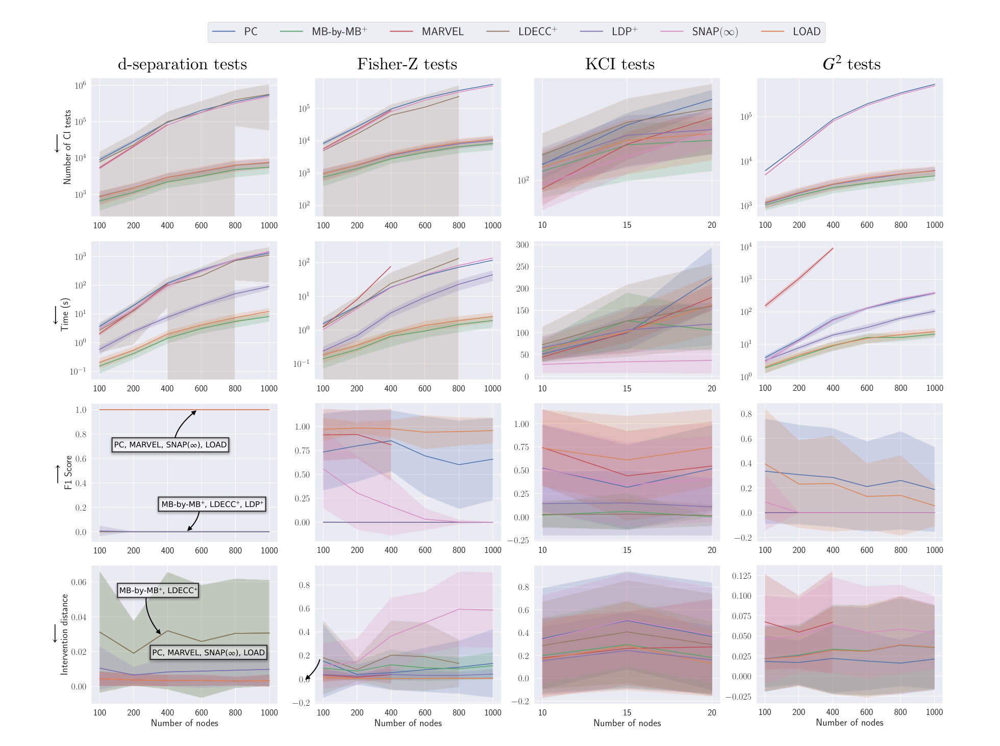
Fig. 1의 결과는 LOAD가 국소와 전역의 좋은 점을 모두 취했음을 보여 줍니다. 행별로 읽어 보겠습니다.
① CI 검정 횟수 (첫째 행). 세 설정 모두에서 LOAD의 검정 횟수는 전역 방법 · LDECC\(^{+}\) · SNAP(\(\infty\))보다 일관되게 훨씬 아래에 있고, MB-by-MB\(^{+}\) · LDP\(^{+}\)보다는 약간 위입니다. 전체 그래프를 복원하지 않으니 전역 방법보다 적고, 최적 조정집합 발견이라는 더 어려운 과제를 풀기 때문에 순수 국소 방법보다는 조금 많습니다. 예상대로의 위치입니다.
② 계산 시간 (둘째 행). 검정 횟수와 유사한 경향이되, LOAD와 MB-by-MB\(^{+}\)가 가장 좋습니다. LDP보다도 빠르며, 예외는 KCI 검정 설정으로 여기서는 SNAP(\(\infty\))이 가장 좋습니다.
③ F1 점수 (셋째 행). 이 논문이 겨냥하는 주 품질 지표입니다.
- 오라클 d-분리: LOAD는 전역 방법 · SNAP(\(\infty\))과 마찬가지로 F1 = 1을 달성하여, 이 과제에 대해 건전하고 완전함이 경험적으로 확인됩니다. 반면 국소 방법(MB-by-MB, LDECC, LDP)의 F1은 0인데, 애초에 최적성이 그들의 목표가 아니므로 예상된 결과입니다.
- 선형 가우시안 + Fisher-Z: LOAD가 모든 기준선을 능가하며 최적 조정집합을 거의 완벽하게 복원합니다. PC · MARVEL · SNAP(\(\infty\))은 일부만 복원하고, 국소 방법들은 여전히 하나도 복원하지 못합니다.
- KCI: 마찬가지로 LOAD가 모든 기준선을 능가합니다.
- 이진 데이터 + \(G^2\): 모든 방법이 고전합니다. 선형 가우시안보다 CI 검정 자체가 본질적으로 어려워 오류가 늘기 때문이며(§H.1), 여기서는 PC가 가장 좋고 LOAD가 그 뒤를 따릅니다. MARVEL과 SNAP(\(\infty\))을 포함한 나머지는 최적 조정집합을 복원하지 못합니다.
④ 개입 거리 (넷째 행). 오라클 d-분리에서 최적 조정집합을 복원하는 방법들(LOAD 포함)은 가장 낮은 개입 거리와 가장 낮은 분산을 동시에 달성합니다. 선형 가우시안에서는 LOAD가 모든 기준선을 능가하고 LDP가 근소한 차이로 뒤따릅니다. 이진 데이터에서는 PC가 가장 낮고 LOAD가 MB-by-MB\(^{+}\) · LDP\(^{+}\)와 함께 두 번째 그룹입니다.
5.4 현실적 데이터 결과
| 방법 | CI 검정 \(\times 10^3\) \(\downarrow\) | Oset의 F1 \(\uparrow\) | 개입 거리 \(\downarrow\) |
|---|---|---|---|
| MAGIC-NIAB | |||
| PC | 14.94 ± 0.34 | 0.32 ± 0.43 | 0.016 ± 0.035 |
| MB-by-MB\(^{+}\) | 2.36 ± 1.65 | 0.03 ± 0.07 | 0.007 ± 0.007 |
| MARVEL | 9.66 ± 4.87 | 0.60 ± 0.42 | 0.011 ± 0.015 |
| LDP\(^{+}\) | 2.49 ± 1.64 | 0.14 ± 0.35 | 0.009 ± 0.010 |
| SNAP(\(\infty\)) | 2.08 ± 1.64 | 0.30 ± 0.29 | 0.010 ± 0.014 |
| LOAD | 5.31 ± 6.79 | 0.62 ± 0.43 | 0.006 ± 0.006 |
| ANDES | |||
| PC | 69.29 ± 2.80 | 0.00 ± 0.00 | 0.005 ± 0.005 |
| MB-by-MB\(^{+}\) | 2.77 ± 1.13 | 0.00 ± 0.00 | 0.004 ± 0.003 |
| MARVEL | 24.75 ± 0.00 | 0.00 ± 0.00 | 0.013 ± 0.032 |
| LDP\(^{+}\) | 2.86 ± 1.12 | 0.00 ± 0.00 | 0.004 ± 0.003 |
| SNAP(\(\infty\)) | 24.75 ± 0.00 | 0.00 ± 0.00 | 0.013 ± 0.032 |
| LOAD | 3.01 ± 1.20 | 0.05 ± 0.15 | 0.002 ± 0.001 |
- 합성 데이터와 마찬가지로 LOAD의 CI 검정 횟수는 전역과 국소 사이에 자리합니다.
- 복원된 조정집합의 품질은 모든 방법 중 최상위권입니다. 특히 ANDES에서는 LOAD만이 유일하게 0이 아닌 F1을 기록했습니다. ANDES는 이진 데이터를 생성하므로 §H.1에서 논의하듯 모든 알고리즘에 상당한 도전이 됩니다.
- 두 설정 모두에서 개입 거리가 가장 낮습니다.
5.5 절제 실험 요약 (Ablations)
본문에서는 절제 실험의 결론만 요약하고, 그림과 함께 보는 상세는 §부록 H에 두었습니다.
- 국소 이웃의 오류(§H.2): 국소 인과 발견 하위 절차가 추정한 국소 이웃에 구조적 오류가 늘수록 LOAD의 F1은 완만하게 떨어집니다. 다만 500개 표본의 선형 가우시안 데이터에서 국소 이웃마다 평균 한 개에 가까운 오류가 있는 상황에서도, LOAD의 F1과 개입 거리는 대부분의 기준선보다 여전히 낫습니다.
- 단계별 오류 전파(§H.3): 앞 단계의 정밀도 · 재현율이 뒤 단계보다 대체로 높습니다. 특히 LOAD는 Step 2에서 매우 높은 정밀도를 보이며 Step 1보다 재현율도 좋습니다. 즉 식별 불가능한 효과를 식별 가능하다고 잘못 말하는 일이 거의 없습니다.
- 국소 발견 알고리즘 교체(§H.4): MB-by-MB를 CMB(Gao and Ji, 2015)로 바꾸면, MB-by-MB 쪽이 계산 시간을 제외한 모든 지표에서 낫습니다.
- 마르코프 블랭킷 발견 알고리즘 교체(§H.5): Grow-Shrink를 Total-Conditioning(Pellet and Elisseeff, 2008b)으로 바꾸면 CI 검정 횟수는 줄고 개입 거리는 비슷하지만 계산 시간이 훨씬 많이 듭니다. 게다가 이진 데이터에서는 최적 조정집합을 전혀 복원하지 못합니다. 점수 기반 S2TMB(Gao and Ji, 2017)는 수십 개 노드만 넘어가도 감당 불가능하게 느려지고 F1과 개입 거리도 Grow-Shrink보다 나쁩니다.
- 배경 지식 제공(§H.6): 처치–결과 관계를 배경 지식으로 주면 LDP의 계산 성능이 개선되고, Step 1을 건너뛰는 변형 LOAD\(^{*}\)는 이진 데이터에서 F1과 개입 거리 모두 PC를 앞지릅니다.
- 식별 가능한 목표 쌍만(§H.7): \(n_V \le 500\)에서 전체 경향은 동일하며, 차이는 다시 이진 설정에서 나타나 LOAD의 F1과 개입 거리가 PC와 동등해집니다.
- 표본 수와 기대 차수(§H.8, §H.9): 표본이 많아지면 PC · MARVEL · SNAP(\(\infty\)) · LOAD의 F1이 개선되고 모든 방법의 개입 거리가 좋아집니다. Fisher-Z에서는 표본 수가 계산 시간에 영향을 주지 않지만 \(G^2\)에서는 시간과 검정 횟수가 함께 늘어 국소 방법과 PC · SNAP(\(\infty\))의 격차가 좁아집니다. 기대 차수가 커지면 CI 검정과 계산 시간이 늘고(특히 PC와 LDECC\(^{+}\)) 개입 거리와 F1은 나빠집니다.
6. 결론 (Conclusions)
논문은 목표 변수쌍의 인과효과 추정을 위한 최적 조정집합을 식별하는, 건전하고 완전한 국소 방법 LOAD를 제안했습니다.
- 기존 국소 발견 방법들과 달리 LOAD는 목표들의 처치–결과 관계를 스스로 판정하고, 인과효과가 식별 가능한지도 결정합니다.
- LOAD는 전역 방법보다 계산적으로 효율적이면서도, 인과효과 추정에 대한 전역 방법의 통계적 효율성을 그대로 유지합니다.
- 향후 과제는 인과충분성이 성립하지 않는 설정으로의 확장입니다. 그 설정에는 유일한 최적 조정집합이 존재하지 않으므로(Smucler et al., 2022), 후보 조정집합을 식별하는 새로운 그래프 기준을 정의해야 합니다.
A. 국소 인과 발견의 문제점 (Issues in Local Causal Discovery)
부록 A는 저자들이 기존 국소 인과 발견 방법에서 발견한 결함들을 정리합니다. §A.1은 여러 알고리즘이 공유하는 하위 절차 LocalPC가 건전하지 않음을, §A.2와 §A.3은 각각 LDECC와 LDP에 고유한 문제를 다룹니다.
A.1 LocalPC의 문제
여러 국소 발견 알고리즘의 핵심 부품은 마르코프 블랭킷 안에서 인접 변수와 배우자(spouse, 공동 부모)를 구분하는 일입니다. Gupta et al. (2023)은 LDECC를 위해 이 절차를 PC 알고리즘의 논리를 따라 Alg. 4처럼 구현했고, Xie et al. (2024)의 MMB-by-MMB와 Li et al. (2025)의 LocICR도 같은 방식을 씁니다.
Algorithm 4: LocalPC
────────────────────────────────────────────────────────────────────
Require: 목표 X, 마르코프 블랭킷 MB(X)
1: Adj(X) ← MB(X)
2: s ← 0
3: while |Adj(X)| > s do
4: for V ∈ Adj(X) do
5: for S ⊆ Adj(X) \ {V} s.t. |S| = s do
6: if X ⊥⊥ V | S then
7: Adj(X) ← Adj(X) \ {V}
8: break
9: s ← s + 1
10: return Adj(X)
────────────────────────────────────────────────────────────────────문제: LocalPC는 건전하지 않습니다. 마르코프 블랭킷 안의 인접하지 않은 배우자를 인접한 것으로 잘못 판정할 수 있습니다.
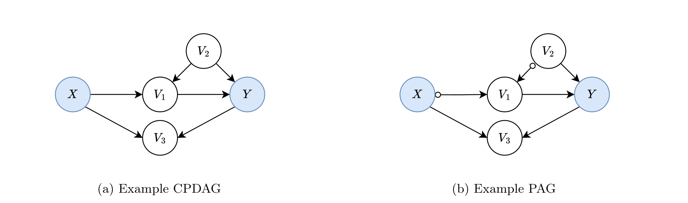
Example A.1. Fig. 2의 CPDAG와 PAG를 보자. 두 그래프 모두에서 \(X\)와 \(Y\)는 인접하지 않는다. 그러나 입력 \(X\)에 대한 Alg. 4의 LocalPC는 \(Y\)를 인접한 것으로 잘못 판정한다.
- LocalPC는 \(s = 0\)에서 \(X \perp\!\!\!\perp V_2\)를 옳게 찾는다.
- LocalPC는 \(\mathrm{Adj}(X)\)에서 \(V_2\)를 제거한다.
- 이후 \(V_2\)는 5행의 조건화 대상으로 다시는 고려되지 않는다.
- 따라서 LocalPC는 \(X \perp\!\!\!\perp Y \mid \{V_1, V_2\}\)를 결코 찾지 못한다.
- LocalPC는 \(Y \in \mathrm{Adj}(X)\)를 잘못 남긴다.
결함의 핵심은, \(X\)와 어떤 \(V\)를 분리하려 할 때 \(X\)의 남은 인접 노드들 중에서만 분리집합을 찾고 \(V\)의 인접 노드는 보지 않는다는 데 있습니다. 참된 PC 알고리즘은 \(X\)의 인접 노드로 분리에 실패하면 \(V\)의 인접 노드 부분집합도 시도합니다. 부모의 상위집합인 양쪽 인접 노드에서 분리집합을 찾는 것이 정당한 이유는 마르코프 조건과 Spirtes et al. (2000)의 Lemma 3.3.9 때문입니다.
Lemma A.1 (Spirtes et al., 2000의 Lemma 3.3.9). DAG \(G\)에서 \(Y\)가 \(X\)의 후손이 아니고 \(X\)와 \(Y\)가 인접하지 않으면, \(X\)와 \(Y\)는 \(\mathrm{Pa}(X)\)에 의해 d-분리된다.
결정적으로 Lemma A.1은 \(Y\)가 \(X\)의 후손일 때는 적용되지 않으며, Example A.1이 바로 그 경우입니다. 국소 알고리즘들은 LocalPC 대신 다음을 구현해야 합니다. 이 결과는 Grow-Shrink 알고리즘의 일부로 등장했고(Margaritis and Thrun, 1999), Pellet and Elisseeff (2008a)에서 논의되었으며, Wang et al. (2014)의 Lemma 1의 따름정리이자 Xie et al. (2024)의 Theorem 1, Li et al. (2025)의 Proposition 1이기도 합니다.
Lemma A.2. DAG/MAG \(G\)에서 \(X\)와 \(Y \in \mathrm{MB}(X)\)에 대해, \(Y\)가 \(X\)에 인접할 필요충분조건은
\[\forall \mathbf{S} \subsetneq \mathrm{MB}(X) \setminus \{Y\} : \quad X \not\perp\!\!\!\perp Y \mid \mathbf{S}.\]
해결책(§A.1.1): 실무적으로 Alg. 4의 LocalPC는 3행과 5행의 \(\mathrm{Adj}(X)\)를 \(\mathrm{MB}(X)\)로 바꾸면 고쳐집니다.
재현 코드(§A.1.2): 논문은 Gupta et al. (2023)의 LDECC 공개 구현으로 Example A.1을 재현하는 코드를 제시합니다. 마지막 줄의 단언(assertion)이 실패하는 이유는 노드 4(예시의 \(Y\))가 노드 0(예시의 \(X\))의 자식으로 반환되기 때문입니다.
import networkx as nx
import pandas as pd
import numpy as np
from causal_discovery.ldecc import LDECCAlgorithm
dag = nx.DiGraph([(0, 1), (0, 3), (1, 4), (2, 1), (2, 4), (4, 3)])
data = np.zeros((2, len(dag.nodes)))
ldecc = LDECCAlgorithm(
treatment_node=0,
outcome_node=4,
alpha=0.05,
use_ci_oracle=True, # 오라클 CI 검정 사용 — 유한표본 오차를 배제
graph_true=dag
)
result = ldecc.run(pd.DataFrame(data))
assert result['tmt_children'] == {1, 3} # 실패: 노드 4가 자식으로 잘못 반환됨Xie et al. (2024)의 MMB-by-MMB 공개 구현에 대해서도 동일한 예시가 실패합니다.
import networkx as nx
import numpy as np
import MMB_by_MMB
import Utils.MMB_TC_Z as tc
dag = nx.DiGraph([(0, 1), (0, 3), (1, 4), (2, 1), (2, 4), (4, 3)])
data = np.zeros((2, len(dag.nodes)))
# CI 검정을 d-분리 오라클로 대체
ci_test = lambda x, y, S, data, alpha: (
nx.is_d_separator(dag, x, y, set(S)),
float(nx.is_d_separator(dag, x, y, set(S))),
)
tc.CI_Test = ci_test
MMB_by_MMB.CI_Test = ci_test
mmb_by_mmb = MMB_by_MMB.MMB_by_MMB(
Data=data,
target=0,
alpha=0.05,
p=len(dag.nodes),
maxK=max([val for _, val in dag.degree()]),
)
result = mmb_by_mmb.mmb_by_mmb()
assert result[3].tolist() == [1] # 실패: 노드 4가 노드 0에 인접한 것으로 반환됨LocICR의 경우에는 \(Y\)가 인접한 것으로 간주되더라도 반환되는 인과 관계 자체는 옳습니다.
A.2 LocalPC를 넘어선 LDECC의 문제
LocalPC를 고치거나 대체하더라도 LDECC는 완전하지 않습니다. 참 CPDAG에서는 방향이 정해지는 처치 인접 엣지를 방향 결정하지 못할 수 있습니다. Gupta et al. (2023)의 Theorem 5는 “처치 \(X\)의 방향 결정 가능한 모든 이웃이 LDECC에 의해 올바르게 방향 결정된다”고 주장하지만, 다음 반례가 있습니다.
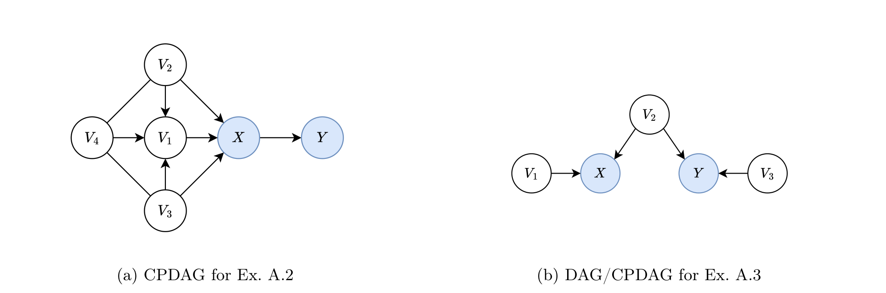
Example A.2. Fig. 3a의 CPDAG를 보자. 이 CPDAG에서 \(X\)의 모든 부모는 방향 결정 가능하다. 그러나 LDECC는 \(V_1\)을 부모로 방향 결정하지 못한다.
- LDECC는 \(\mathrm{MB}(X) = \{Y, V_1, V_2, V_3\}\)을 옳게 식별한다.
- LDECC는 \(\mathrm{Adj}(X) = \{Y, V_1, V_2, V_3\}\)을 옳게 식별한다.
- LDECC는 \(Y \perp\!\!\!\perp V_{1,2,3,4} \mid X\)를 옳게 찾는다.
- LDECC는 \(V_2 \perp\!\!\!\perp V_3 \mid V_4\)를 옳게 찾는다.
- 7행의 조건이 만족되어 \(V_2\)와 \(V_3\)이 부모로 옳게 식별된다.
- 19행의 조건이 만족되어 \(Y\)가 자식으로 옳게 식별된다.
- 다른 독립 관계가 존재하지 않으므로 LDECC는 \(V_1\)을 방향 미결정 상태로 잘못 남긴다.
Example A.2에 PC를 돌리면, 먼저 v-구조 \(V_2 \to V_1 \leftarrow V_3\)을 방향 결정하고, Meek 규칙 3으로 \(V_4 \to V_1\)을, 마지막으로 Meek 규칙 1로 \(V_1 \to X\)를 얻습니다. 결정적으로, 이 전파를 시작하는 v-구조의 \(V_2\)와 \(V_3\)이 둘 다 \(X\)에 인접해 있어 \(X\)와 분리될 수 없습니다. LDECC는 이 시나리오를 처리하는 조건을 갖고 있지 않아 실패하며, 이 구조는 Gupta et al. (2023)의 Theorem 5 증명 중 Meek 규칙 1에 대한 부분 — “\(V_2\)와 \(V_3\)은 \(V_1\)을 포함해야 하는 분리집합으로 \(X\)와 분리될 수 있다” — 과 정면으로 모순됩니다.
import networkx as nx
import pandas as pd
import numpy as np
from causal_discovery.ldecc import LDECCAlgorithm
dag = nx.DiGraph([(0,1), (2,0), (3,0), (4,0), (3,2), (4,2), (5,2), (5,3), (5,4)])
data = np.zeros((2, len(dag.nodes)))
ldecc = LDECCAlgorithm(
treatment_node=0,
outcome_node=1,
alpha=0.05,
use_ci_oracle=True,
graph_true=dag
)
result = ldecc.run(pd.DataFrame(data))
assert result['tmt_parents'] == {2, 3, 4} # 실패: 노드 2(예시의 V1)가 부모로 인식되지 않음A.3 LDP의 문제
LDP는 처치–결과 쌍과의 인과 관계에 따라 다른 변수들을 분할해 유효 조정집합을 찾습니다(Maasch et al., 2024). 처치 \(X\)의 결과 \(Y\)에 대한 인과효과에 대해 유효 뒷문 조정집합을 발견하려면 다음 네 조건이 성립해야 합니다.
- \(X\)와 \(Y\)가 주변 종속(marginally dependent)이다.
- \(Y\)가 \(X\)의 조상이 아니다.
- \(Y\)의 비-후손 중 \(Y\)와는 주변 종속이지만 \(X\)와는 주변 독립인 변수가 존재한다.
- \(X\)의 비-후손 중, \(Y\)에 대한 인과효과가 전적으로 \(X\)를 통해 매개되고, \(Y\)와 어떤 교란자도 공유하지 않으며, \(X\)와 \(Y\) 사이의 활성 뒷문 경로 위에 있는 \(X\)의 모든 비-후손과 주변 독립인 변수가 존재한다.
Maasch et al. (2024)은 “\(X\)의 \(Y\)에 대한 인과효과는 임의의 강도이거나 영(null)일 수 있다”고 밝히고 있으므로, 위 조건만 성립하면 \(X\)가 \(Y\)의 조상일 필요는 없습니다(다만 그럴 경우 네 번째 조건의 “전적으로 매개된다”가 무엇을 뜻하는지는 분명하지 않습니다). 그런데 바로 이 경우에 반례가 생깁니다.
Example A.3. Fig. 3b의 인과 DAG(대응 CPDAG와 동일)를 보자. 이 DAG는 위 조건을 모두 만족한다.
- \(X\)와 \(Y\)는 주변 종속이다.
- \(Y\)는 \(X\)의 조상이 아니다.
- \(V_3\)은 \(Y\)의 비-후손으로서 \(Y\)와 주변 종속이지만 \(X\)와는 주변 독립이다.
- \(V_1\)은 \(X\)의 비-후손으로서 \(Y\)에 대한 효과가 전적으로 \(X\)를 통해 매개되고, \(Y\)와 교란자를 공유하지 않으며, \(X\)와 \(Y\) 사이의 활성 뒷문 경로 위에 있는 유일한 \(X\)의 비-후손인 \(V_2\)와 주변 독립이다.
나아가 CPDAG로부터 유효 조정집합 \(\{V_2\}\)와 인과효과 0을 식별할 수 있다. 그럼에도 LDP는 어떤 유효 뒷문 조정집합도 찾지 못한다.
- Step 1은 \(\mathbf{Z}_8 = \emptyset\)을 옳게 식별한다.
- Step 2는 \(\mathbf{Z}_4 = \{V_3\}\)을 옳게 식별한다.
- Step 3은 \(Y \perp\!\!\!\perp V_1\)이기 때문에 \(\mathbf{Z}_{5,7} = \{V_1\}\) 대신 \(\mathbf{Z}_{5,7} = \emptyset\)을 잘못 식별한다.
- Step 4는 \(\mathbf{Z}_{\mathrm{POST}} = \emptyset\)을 옳게 식별한다.
- Step 5는 \(\mathbf{Z}_{\mathrm{MIX}} = \emptyset\)을 옳게 식별한다.
- Step 6은 \(\mathbf{Z}_{\mathrm{MIX}} = \emptyset\)이므로 건너뛰어져 \(\mathbf{Z}_1 = \mathbf{Z}_{1,5} = \emptyset\)이라는 잘못된 결과를 낳는다.
- Step 7은 \(\mathbf{Z}_1 = \mathbf{Z}_{1,5} = \emptyset\)이므로 건너뛰어져 \(\mathbf{Z}_5 = \emptyset\)이라는 잘못된 결과를 낳는다.
- Step 8은 \(\mathbf{Z}_5 = \emptyset\)이므로 유효 조정집합이 식별 불가능하다고 잘못 결론짓는다.
실패의 원인은 조건 4를 만족하는 처치의 비-후손들이 모두 결과와 주변 독립이어서 Step 3의 조건을 위배한다는 데 있습니다. 따라서 LDP는 조건 4에 “기존 조건을 모두 만족하는 비-후손 중 적어도 하나는 결과와도 주변 종속이어야 한다”는 요구를 덧붙이면 손쉽게 고칠 수 있습니다.
import numpy as np
import networkx as nx
import pandas as pd
from ldp import LDP
dag = nx.DiGraph([(0, 1), (2, 1), (2, 3), (4, 3)])
data = np.zeros((2, len(dag.nodes)))
ldp = LDP(data=pd.DataFrame(data), independence_test="oracle")
ldp.test = lambda x, y, S: float(nx.is_d_separator(dag, x, y, set(S) if S else set()))
res = ldp.partition_z(exposure=1, outcome=3)
assert res["Z1"] != [] # 실패: 노드 2(V2)가 유효 조정집합으로 인식되지 않음B. 확장된 국소 인과 발견 알고리즘 (Extended Local Causal Discovery Algorithms)
§4.1에서 제시한 확장을 실제 알고리즘으로 구현한 것이 부록 B입니다. 세 알고리즘 모두 Alg. 1로 조상 관계를 판정한 뒤, 가능한 처치–결과 관계에 따라 조정집합을 반환합니다.
- MB-by-MB\(^{+}\) (Alg. 5)와 LDECC\(^{+}\) (Alg. 6): 각각 MB-by-MB와 LDECC로 국소 정보를 찾고, 상대의 명시적 또는 가능한 조상으로 판정된 각 목표에 대해 국소적으로 유효한 부모 집합을 반환합니다. LDECC\(^{+}\)는 Alg. 1의 2–3행에서 MB-by-MB를 LDECC로 대체한 것만 다릅니다.
- LDP\(^{+}\) (Alg. 7): MB-by-MB로 국소 정보를 찾되, 조정집합은 LDP를 호출해 결정합니다.
Algorithm 5/6/7: MB-by-MB+ / LDECC+ / LDP+
────────────────────────────────────────────────────────────────────
Require: 목표 X, Y ∈ V 와 변수 집합 V
Ensure : Relation, 그리고 (가능한) 처치들의 조정집합
1: AdjSets_{X→Y} ← ∅, AdjSets_{Y→X} ← ∅
▷ Step 1: 조상 관계 판정
2: Relation, G_X, G_Y ← LocalRelate(X, Y, V) ▷ Alg. 1
3: if Relation(X,Y) = ExplAn then
4: AdjSets_{X→Y} ← F(X, Y, G_X)
5: else if Relation(Y,X) = ExplAn then
6: AdjSets_{Y→X} ← F(Y, X, G_Y)
7: else ▷ 처치·결과를 확정할 수 없음
8: if Relation(X,Y) = PossAn then
9: AdjSets_{X→Y} ← F(X, Y, G_X)
10: if Relation(Y,X) = PossAn then
11: AdjSets_{Y→X} ← F(Y, X, G_Y)
12: return Relation, AdjSets
여기서 F = LocalValidSets (Alg. 5: LocalRelate는 MB-by-MB 사용)
LocalValidSets (Alg. 6: LocalRelate는 LDECC 사용)
LDP (Alg. 7: LocalRelate는 MB-by-MB 사용)
────────────────────────────────────────────────────────────────────C. 추가 알고리즘 (Additional Algorithms)
부록 C는 LOAD가 사용하는 모든 하위 절차의 의사코드를 제공합니다.
C.1 조상 관계 검정: Alg. 8과 Alg. 9
Alg. 8은 정리 4.1을, Alg. 9는 정리 4.2의 부정 — 즉 \(X \not\perp\!\!\!\perp Y \mid \mathrm{Pa}_G(X)\)이면 \(X\)가 \(Y\)의 가능한 조상 — 을 구현합니다. 두 알고리즘 모두 CI 검정을 수행하기 전에 \(X\) 주변의 국소 정보만으로 답을 낼 수 있는지 먼저 확인하여 불필요한 검정을 아낍니다.
Algorithm 8: IsExplAn Algorithm 9: IsPossAn
────────────────────────────────── ──────────────────────────────────
Require: 노드 X, Y 와 그래프 G Require: 노드 X, Y 와 그래프 G
1: if Y ∈ Ch_G(X) then 1: if Y ∈ Ch_G(X) ∪ Sib_G(X) then
2: return True 2: return True
3: else if Y ∈ Pa_G(X) ∪ Sib_G(X) then 3: else if Y ∈ Pa_G(X) then
4: return False 4: return False
5: else if X ⊥̸⊥ Y | Pa_G(X)∪Sib_G(X) 5: else if X ⊥̸⊥ Y | Pa_G(X) then
6: return True 6: return True
7: else 7: else
8: return False 8: return False
────────────────────────────────── ──────────────────────────────────두 알고리즘의 대칭성을 눈여겨볼 만합니다. 명시적 조상성은 자식만 즉시 True를 주고 부모와 형제가 즉시 False를 주는 반면, 가능한 조상성은 자식과 형제가 즉시 True를 주고 부모만 즉시 False를 줍니다. 형제 \(X - Y\)는 “확정된 유향 경로”는 아니지만 “가능한 유향 경로”는 되기 때문입니다. 조건화 집합도 같은 논리로 갈립니다 — 명시적 조상 검정은 \(\mathrm{Pa} \cup \mathrm{Sib}\)로, 가능한 조상 검정은 \(\mathrm{Pa}\)만으로 조건화합니다.
C.2 국소적으로 유효한 부모 조정집합: Alg. 10
Alg. 10은 Maathuis et al. (2009)의 Algorithm 3을 살짝 변형한 것으로, 그것을 이용한 인과효과 추정치 대신 모든 국소 유효 부모 조정집합 자체를 반환합니다.
Algorithm 10: LocalValidSets
────────────────────────────────────────────────────────────────────
Require: 처치 T, 결과 O, 그래프 G
1: ValidSets ← ∅
2: for S ⊆ Sib_G(T) \ {O} do
▷ 새 후보 부모 S ∈ S 가 나머지 후보 부모 Pa_G(T) ∪ S \ {S} 전부와 인접한지 확인
3: Valid ← True
4: for S ∈ S do
5: if (Pa_G(T) ∪ S \ {S}) ⊄ Adj_G(S) then
6: Valid ← False
7: break
8: if Valid then
9: ValidSets ← ValidSets ∪ {Pa_G(T) ∪ S}
10: return ValidSets
────────────────────────────────────────────────────────────────────직관: 형제들의 부분집합 \(\mathbf{S}\)를 \(\mathrm{Pa}_G(T)\)에 더해 \(T\)의 부모로 간주했을 때 새로운 v-구조가 생기는지를 확인하는 것입니다. 새 v-구조가 생기면 추가 방향 결정이 뒤따르고, 이는 그들이 원래 CPDAG에서 부모가 아니라 형제였다는 사실과 모순됩니다. 이를 피하는 간단한 방법이 현재 고려 중인 부모들과 인접한 후보만 추가하는 것입니다.
C.3 캐싱을 붙인 MB-by-MB: Alg. 11
Alg. 11은 Wang et al. (2014)의 MB-by-MB를 구현합니다. MB-by-MB는 정지 기준이 만족될 때까지 변수들의 마르코프 블랭킷을 순차적으로 발견해 가며 목표 변수의 부모 · 자식 · 형제를 식별하는 국소 인과 발견 알고리즘입니다. 원 논문과 마찬가지로 \(\mathrm{MB}^{+}(X) = \mathrm{MB}(X) \cup \{X\}\) 표기를 씁니다.
저자들은 여기에 캐싱을 추가했습니다. 이전 실행에서 이미 식별한 분리집합 · 마르코프 블랭킷 · 국소 구조를 재사용하여, 같은 관계를 여러 번 식별하는 낭비를 없앱니다. 캐시가 비어 있으면 원래 알고리즘과 정확히 동일하게 동작합니다.
Algorithm 11: MB-by-MB (Wang et al., 2014) with caching
────────────────────────────────────────────────────────────────────
Require: 목표 T ∈ V, 변수 집합 V, 캐시된 마르코프 블랭킷 MB, 캐시된 국소 구조 L
1: procedure Orient-Undirected-Edges(G)
2: for (a → b − c) ∈ G do
3: if (a, c)의 분리집합이 존재하고 b ∈ sepset(a, c) then
4: G에서 b → c 로 방향 결정
5: for (a → b → c − a) ∈ G do
6: G에서 a → c 로 방향 결정
7: for a − b, a − c → b, a − d → b ∈ G do
8: if (c, d)의 분리집합이 존재하고 a ∈ sepset(c, d) then
9: G에서 a → b 로 방향 결정
10: return G
11: 이전 실행의 캐시 sepset, MB, L 을 가져온다
12: DoneList = ∅
13: WaitList = [T]
14: G = {V, ∅}
15: repeat
16: X ← WaitList의 맨 앞 노드를 꺼낸다
17: if MB(X) ∈ MB then
18: 이전 실행의 캐시된 MB(X)를 사용
19: else
▷ 설계 선택: Wang et al.(2014)의 IAMB 대신 Grow-Shrink 사용
20: Grow-Shrink 마르코프 블랭킷 알고리즘으로 MB(X)를 찾는다
21: MB(X)를 캐시에 추가
22: [MB(X) \ DoneList \ WaitList] 를 WaitList 꼬리에 추가
23: X를 DoneList에 추가
24: if L_X ∈ L then
25: 이전 실행의 캐시된 L_X 를 사용
26: else if 어떤 X' ∈ DoneList 에 대해 MB+(X) ⊆ MB+(X') then
27: L_X ← MB+(X) 위에서의 L_{X'} 의 부분구조
28: else if MB(X) ⊆ DoneList then
29: L_X ← MB+(X) 위에서의 G 의 부분구조
30: else
▷ 설계 선택: Wang et al.(2014)의 IC 대신 PC 골격 탐색 + v-구조 방향 결정
31: MB+(X)의 관측 데이터로부터 PC를 이용해 L_X 를 학습하고 sepset 캐시를 갱신
32: L_X 를 캐시에 추가
33: L_X 에서 X에 연결된 엣지와 X를 포함하는 v-구조를 G에 넣는다
34: Orient-Undirected-Edges(G)를 호출해 G의 무향 엣지를 방향 결정
35: G에서 T로 가는 경로가 유향 엣지에 의해 차단된 모든 노드를 WaitList에서 제거
36: until WaitList가 빈다
37: return G, MB, L
────────────────────────────────────────────────────────────────────31행에서 \(X\)의 국소 구조 \(L_X\)는 \(\mathrm{MB}^{+}(X)\) 위에서 PC의 골격(skeleton) 단계를 돌린 뒤 v-구조를 방향 결정해 학습합니다. 이 구조는 잠재 교란 때문에 잘못된 엣지를 포함할 수 있지만, Wang et al. (2014)은 \(L_X\)에서 \(X\)에 연결된 엣지와 \(X\)를 포함하는 v-구조는 옳다는 것을 증명했으므로, 33행에서 이들을 전체 그래프 \(G\)에 안전하게 추가할 수 있습니다.
D. 증명 (Proofs)
D.1 문헌에서 가져온 유용한 결과들
증명에 앞서 네 개의 기존 결과를 정리합니다.
Theorem D.1 (Wang et al., 2014의 Theorem 3). 인과 네트워크가 인과충분적이고 어떤 확률분포에 충실하며 모든 조건부 독립이 올바르게 검정된다고 하자. 그러면 MB-by-MB 알고리즘은 목표 노드 \(T\)에 연결된 엣지들을 올바르게 발견할 수 있다. 나아가 이 엣지들은 바탕 전역 인과 네트워크의 마르코프 동치류를 나타내는 부분 유향 네트워크에서와 동일하게 올바로 방향 결정된다.
즉 MB-by-MB 이후 목표에 인접한 모든 노드의 엣지는 바탕 CPDAG에서와 같은 방향을 갖습니다. 다시 말해 각 목표의 부모 · 자식 · 형제가 정확히 식별됩니다. 이것이 LOAD의 모든 국소 정보에 대한 신뢰의 근거입니다.
Lemma D.1 (Zhang, 2008의 Lemma B.1). CPDAG \(G\)의 서로 다른 노드 \(X, Y\)에 대해, \(p\)가 \(X\)에서 \(Y\)로 가는 가능 유향 경로이면 \(p\)의 어떤 부분열이 \(X\)에서 \(Y\)로 가는 비차폐(unshielded) 가능 유향 경로를 이룬다.
여기서 비차폐 경로란 경로 위의 모든 연속 삼중항 \(X, Y, Z\)가 비차폐 — 즉 \(X\)와 \(Z\)가 인접하지 않음 — 인 경로입니다(Perković et al., 2018).
Theorem D.2 (Andersson et al., 1997의 Theorem 4.1). 그래프 \(G = (\mathbf{V}, \mathbf{E})\)가 어떤 DAG \(\mathcal{D}\)의 CPDAG와 같을 필요충분조건은 다음 네 조건을 만족하는 것이다.
- \(G\)는 연쇄 그래프(chain graph)이다.
- \(G\)의 모든 연쇄 성분 \(\tau\)에 대해 \(G_\tau\)는 현(chordal) 그래프이다.
- 구조 \(X \to Y - Z\)가 \(G\)의 유도 부분그래프로 나타나지 않는다.
- \(G\)의 모든 유향 엣지 \(X \to Y\)는 \(G\)에서 강하게 보호(strongly protected)된다.
이 논문의 증명은 항목 1과 3만 사용합니다.
- 항목 1: 모든 CPDAG는 연쇄 그래프이므로, 유향 엣지와 무향 엣지를 모두 가질 수 있으나 부분 유향 순환(partially directed cycle) — \(X\)에서 \(Y\)로 가는 가능 인과 경로와 \(Y\)에서 \(X\)로 가는 유향 경로로 만들어지는 순환 — 은 포함할 수 없습니다.
- 항목 3: 어떤 CPDAG도 구조 \(X \to Y - Z\)를 포함할 수 없습니다.
Corollary D.1 (Maathuis and Colombo, 2015의 Corollary 4.2). CPDAG \(\mathcal{C}\)의 서로 다른 두 정점 \(X, Y\)에 대해, \(\mathcal{C}_X\)를 \(\mathcal{C}\)에서 \(X\)로부터 나가는 모든 유향 엣지를 제거해 얻은 그래프라 하자. 그러면 \((X, Y)\)와 \(\mathcal{C}\)에 대한 일반화 뒷문 집합(generalized back-door set)이 존재할 필요충분조건은 \(Y \in \mathrm{Pa}_\mathcal{C}(X)\)이고 \(Y \notin \mathrm{PossDe}_{\mathcal{C}_X}(X)\)인 것이다. 나아가 그러한 집합이 존재하면 \(\mathrm{Pa}_\mathcal{C}(X)\)가 그러한 집합이다.
\((X, Y)\)에 대한 일반화 뒷문 집합은 \(X\)의 \(Y\)에 대한 인과효과 추정을 가능하게 하는 유효 조정집합입니다. 요컨대 \(X\)의 \(Y\)에 대한 인과효과가 식별 가능하면 확정된 부모 \(\mathrm{Pa}_\mathcal{C}(X)\)가 유효 조정집합이라는 것이며, 이 사실은 §D.4의 Case 1b에서 결정적으로 쓰입니다.
D.2 Lemma 4.1의 증명
먼저 Alg. 8과 Alg. 9의 건전성 · 완전성을 확립합니다.
Lemma D.2. Alg. 8은 목표 변수쌍 사이의 명시적 조상 관계를 찾는 데 건전하고 완전하다.
증명. CPDAG \(G\)의 목표 쌍 \(X, Y\)를 생각합니다. \(\mathrm{IsExplAn}(X, Y)\)가 True를 반환할 필요충분조건이 “\(X\)가 \(G\)에서 \(Y\)의 명시적 조상”, 즉 CPDAG에 \(X\)에서 \(Y\)로 가는 유향 경로가 있는 것임을 보이면 됩니다.
(i) \(X\)와 \(Y\)가 인접한 경우. 이때 \(X\)가 \(Y\)의 명시적 조상일 필요충분조건은 \(Y\)가 \(X\)의 확정된 자식인 것입니다.
- (“if” 방향) \(Y\)가 \(X\)의 자식이면 \(X\)에서 \(Y\)로 가는 유향 경로가 존재하므로 명시적 조상입니다(1–2행).
- (“only if” 방향) \(X\)가 \(Y\)의 명시적 조상이면 정의상 \(X\)에서 \(Y\)로 가는 유향 경로가 있습니다. 그러면 \(X\)와 \(Y\) 사이의 엣지는 반드시 \(X \to Y\)로 방향지어져야 합니다. 그렇지 않으면 \(G\)에 부분 유향 순환이 생기는데, Theorem D.2에 의해 이는 CPDAG에서 금지됩니다. 따라서 \(X\)와 \(Y\)가 인접하되 \(Y\)가 자식이 아니라면 — 즉 \(Y\)가 \(X\)의 부모나 형제라면 — \(X\)는 \(Y\)의 명시적 조상일 수 없습니다(3–4행).
(ii) \(X\)와 \(Y\)가 인접하지 않은 경우. 5–8행이 Fang et al. (2022)의 Theorem 4.1을 그대로 구현하며, 이는 명시적 조상성 판정에 대한 건전하고 완전한 기준입니다. \(\blacksquare\)
Lemma D.3. Alg. 9는 목표 변수쌍 사이의 가능한 조상 관계를 찾는 데 건전하고 완전하다.
증명. \(\mathrm{IsPossAn}(X, Y)\)가 True를 반환할 필요충분조건이 “\(X\)에서 \(Y\)로 가는 가능 유향 경로 존재”임을 보입니다.
(i) 인접한 경우. \(X\)가 \(Y\)의 가능한 조상일 필요충분조건은 \(Y\)가 \(X\)의 자식이거나 형제인 것입니다.
- (“if”) \(Y\)가 자식이거나 형제면 \(X\)에서 \(Y\)로 가는 가능 유향 경로가 있으므로 정의상 가능한 조상입니다(1–2행).
- (“only if”) \(X\)가 \(Y\)의 가능한 조상이면 \(Y\)는 \(X\)의 확정된 부모일 수 없습니다. 만약 부모라면 \(Y\)는 확정적 조상 — \(G\)가 나타내는 모든 DAG에서 \(X\)의 조상 — 이 되고, 비순환성에 의해 그 어떤 DAG에서도 \(X\)가 \(Y\)의 조상일 수 없으므로 정의상 \(X\)는 \(Y\)의 가능한 조상이 아니게 됩니다(3–4행).
(ii) 인접하지 않은 경우. 5–8행이 Fang et al. (2022)의 Theorem 4.2를 구현합니다. \(\blacksquare\)
Lemma 4.1. Alg. 1은 목표 변수쌍 사이의 확정적 비-조상 · 가능한 조상 · 명시적 조상 관계를 찾는 데 건전하고 완전하다.
증명. 알고리즘 시작 시 두 방향의 추정 인과 관계는 기본값 DefNonAn으로 설정됩니다(1행). 이어 MB-by-MB로 \(X\)와 \(Y\) 주변의 국소 정보를 발견합니다(2–3행).
Theorem D.1에 의해 이 국소 정보는 CPDAG에서 각 목표의 부모 · 자식 · 형제를 올바르게 식별합니다. 이 정보만으로 앞의 보조정리들을 적용할 수 있으므로,
- 각 방향의 명시적 조상성을 Alg. 8로 올바르게 식별하고(4–7행, Lemma D.2),
- 각 방향의 가능한 조상성을 Alg. 9로 올바르게 식별합니다(8–12행, Lemma D.3).
명시적 조상성은 한 방향만 성립할 수 있고 다른 방향은 확정적 비-조상으로 기본값이 유지되는 반면, 가능한 조상성은 (예컨대 \(X\)와 \(Y\)가 무향 경로로 연결된 경우처럼) 양방향이 동시에 성립할 수 있으므로 두 방향을 모두 검사합니다.
마지막으로 한 목표, 예컨대 \(X\)가 다른 목표 \(Y\)의 확정적 비-조상이라 합시다. 정의상 \(X\)가 \(Y\)의 가능한 조상이 아닐 때 확정적 비-조상입니다. 그리고 \(X\)가 가능한 조상이 아니면 명시적 조상도 아닙니다. 나아가 \(Y\)가 \(X\)의 명시적 조상이면 \(X\)는 \(Y\)의 가능한 조상이 아닙니다. Alg. 8과 Alg. 9가 건전하고 완전하므로, \(X\)가 \(Y\)의 확정적 비-조상일 필요충분조건은 Alg. 1이 (i) \(Y\)가 \(X\)의 명시적 조상임을 찾거나, (ii) \(X\)가 \(Y\)의 명시적 조상도 가능한 조상도 아님을 찾는 것 — 이 경우 \(X\)의 \(Y\)에 대한 관계를 한 번도 갱신하지 않아 기본값인 확정적 비-조상을 올바르게 반환 — 입니다. \(\blacksquare\)
D.3 Lemma 4.2의 증명
Lemma 4.2. CPDAG \(G\)에서 \(X \in \mathrm{PossAn}_G(Y)\)인 서로 다른 두 노드 \(X, Y\)에 대해, \(X\)의 \(Y\)에 대한 인과효과가 식별 가능하려면 \(X\)가 \(G\)에서 \(Y\)의 명시적 조상이어야 한다.
증명의 뼈대는 §4.2 Step 1에서 이미 따라갔으므로, 여기서는 논리 사슬만 정리합니다.
- 귀류법 가정: \(X\)가 가능한 조상이지만 명시적 조상은 아니라고 하자. 즉 \(X\)에서 \(Y\)로 가는 가능 유향 경로는 있으나 유향 경로는 없다.
- 최단 경로 \(p\)의 비차폐성: \(p\)를 최단 가능 유향 경로라 하면, Lemma D.1에 의해 \(p\)의 어떤 부분열이 비차폐 가능 유향 경로인데, \(p\)가 최단이므로 그 부분열은 \(p\) 자신이다.
- \(p\)에 충돌자 없음: \(p\)가 비차폐인데 충돌자가 있다면 비차폐 충돌자 \(V \to V' \leftarrow V''\)가 CPDAG에서도 그렇게 방향지어지고, 엣지 \(V' \leftarrow V''\)가 역방향이므로 \(p\)는 가능 유향 경로가 아니게 되어 모순이다. 따라서 \(p\)의 모든 노드는 MEC의 모든 DAG에서 비-충돌자다.
- 두 DAG의 충돌: \(p\)가 “완전히” 유향은 아니므로, MEC 안에 \(p\)가 \(X \to \cdots \to Y\)로 방향지어진 DAG \(\mathcal{D}_1\)과, 그렇지 않으면서도 빈 조건화 집합에서 여전히 열려 있는 DAG \(\mathcal{D}_2\)가 모두 존재한다.
- 모순: \(\mathcal{D}_1\)에서 \(p\)는 인과 경로이므로 유효 조정집합은 \(p\) 위 노드를 포함할 수 없다. \(\mathcal{D}_2\)에서 \(p\)는 열려 있는 비인과 경로이므로 유효 조정집합은 \(p\) 위 노드를 적어도 하나 포함해야 한다. 따라서 MEC의 모든 DAG에서 유효한 공통 집합이 없고, 인과효과는 식별 불가능하다. \(\blacksquare\)
D.4 Lemma 4.3의 증명
먼저 보조 보조정리 하나가 필요합니다. 이것이 Alg. 2의 1–2행(인접이면 즉시 False)을 정당화합니다.
Lemma D.4. CPDAG \(G\)에서 \(X \in \mathrm{PossAn}_G(Y)\)인 서로 다른 두 노드 \(X, Y\)에 대해, \(G\)가 \(X\)와 \(Y\)에 대해 조정 순응적이면 모든 \(V \in \mathrm{Sib}_G(X)\)에 대해 \(Y \notin \mathrm{Adj}_G(V)\)이다.
증명. 임의의 \(V \in \mathrm{Sib}_G(X)\), 즉 \(X - V\)를 생각합니다.
- \(V - Y\)나 \(V \to Y\)가 \(G\)에 있을 수 없습니다. 있다면 \(X - V - Y\) 또는 \(X - V \to Y\)라는, \(X\)에서 나가는 유향 엣지로 시작하지 않는 가능 유향 경로가 생겨 정의상 순응성이 깨집니다.
- \(X \in \mathrm{PossAn}_G(Y)\)이므로 \(X\)에서 \(Y\)로 가는 가능 유향 경로가 있습니다. 그런데 \(V \leftarrow Y\)가 \(G\)에 있다면 \(X \to \cdots Y \to V - X\)라는 부분 유향 순환이 생기고, Theorem D.2에 의해 이는 CPDAG에서 금지됩니다.
따라서 \(V\)와 \(Y\)는 인접할 수 없습니다. \(\blacksquare\)
Lemma 4.3. CPDAG \(G\)에서 \(X \in \mathrm{PossAn}_G(Y)\)인 서로 다른 두 노드 \(X, Y\)에 대해, \(G\)가 \((X, Y)\)에 대해 조정 순응적일 필요충분조건은 \(\forall V \in \mathrm{Sib}_G(X) : V \perp\!\!\!\perp Y \mid \mathrm{Pa}_G(V) \cup \{X\}\)이다.
“if” 방향 (조건부 독립 \(\Rightarrow\) 순응성)
\(\forall V \in \mathrm{Sib}_G(X)\)에 대해 \(V \perp\!\!\!\perp Y \mid \mathrm{Pa}_G(V) \cup \{X\}\)를 가정하고, \(X\)에서 \(Y\)로 가는 모든 가능 유향 경로가 \(X\)의 확정된 자식으로 시작함을 보이면 됩니다(그러면 \(X\)에서 나가는 유향 엣지로 시작하는 것이므로 Perković et al. (2015)에 따라 순응적입니다).
\(X\)에 인접한 노드는 형제 · 부모 · 자식 중 하나입니다. 가능 유향 경로는 \(X\)로 들어오는 엣지로 시작할 수 없으므로 부모로 시작하는 경우는 배제되고, 남은 것은 형제로 시작하지 않음을 보이는 것뿐입니다.
임의의 \(V \in \mathrm{Sib}_G(X)\)를 봅시다. 충실성 가정하에서 \(V\)와 \(Y\)는 d-분리될 수 있으므로 인접하지 않습니다. 이제 \(V\)와 \(Y\) 사이에 열린 경로가 있다면,
- 확정된 부모 \(\mathrm{Pa}_G(V)\)로 조건화하면 \(V\)로 들어오는 엣지로 시작하는 경로가 모두 차단됩니다(확정된 부모는 정의상 그런 경로에서 충돌자가 될 수 없으므로).
- 그 밖의 열린 경로 — \(V\)에서 무향 엣지나 나가는 유향 엣지로 시작하는 경로 — 가 존재한다면, 가정상 d-분리가 성립해야 하는데 \(\mathrm{Pa}_G(V)\)로는 막을 수 없으므로 반드시 \(X\)에 의해 차단되어야 합니다. 즉 \(X\)가 그런 모든 경로 위에 놓여 있습니다.
정의상 \(V\)에서 \(Y\)로 가는 가능 유향 경로는 이 경로들의 부분집합이므로, 그것들도 모두 \(X\)를 지납니다. 그렇다면 \(X\)에서 \(Y\)로 가는 어떤 가능 유향 경로도 형제 \(V\)를 지날 수 없습니다(지난다면 \(X\)가 경로에 두 번 나타나야 합니다). 부모를 통과할 수도 없으므로, 결국 \(X\)에서 \(Y\)로 가는 모든 가능 유향 경로는 \(X\)의 자식으로 시작합니다. 즉 \(G\)는 \((X, Y)\)에 대해 순응적입니다. \(\blacksquare\)
“only if” 방향 (순응성 \(\Rightarrow\) 조건부 독립)
이제 \(G\)가 \((X, Y)\)에 대해 조정 순응적이라 가정합니다. 임의의 \(V \in \mathrm{Sib}_G(X)\)에 대해, Lemma D.4에 의해 \(V\)와 \(Y\)는 인접하지 않으므로 d-분리될 수 있고, 인과 마르코프 가정에 의해 적절한 분리집합이 주어지면 조건부 독립이 성립합니다. 남은 일은 \(\mathrm{Pa}_G(V) \cup \{X\}\)가 \(V\)와 \(Y\) 사이의 모든 경로를 차단함을 보이는 것이며, 논문은 이를 네 가지 배타적이고 망라적인 경우로 나눕니다.
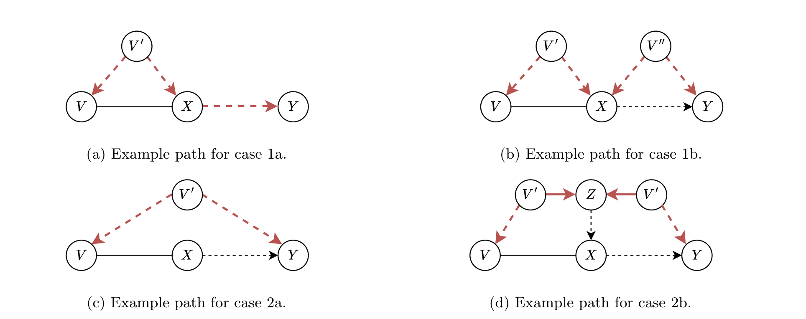
네 경우는 다음과 같습니다.
- \(V\)와 \(Y\) 사이의 경로 \(p\)가 \(X\)를 지나고,
- (a) MEC의 DAG \(\mathcal{D}\)에서 \(X\)가 \(p\) 위의 비-충돌자인 경우 (Fig. 4a)
- (b) MEC의 DAG \(\mathcal{D}\)에서 \(X\)가 \(p\) 위의 충돌자인 경우 (Fig. 4b)
- \(p\)가 \(X\)를 지나지 않고,
- (a) \(\mathcal{D}\)에서 \(p\)가 \(X\)의 조상이면서 \(p\) 위의 충돌자인 노드 \(Z\)를 포함하지 않는 경우 (Fig. 4c)
- (b) \(\mathcal{D}\)에서 \(p\)가 그런 \(Z\)를 포함하는 경우 (Fig. 4d)
Case 1a. \(X\)가 \(p\) 위의 비-충돌자이므로, \(\mathrm{Pa}_G(V)\)로 함께 조건화하든 아니든 \(X\)로 조건화하는 것만으로 \(p\)가 차단됩니다.
Case 1b. \(X\)가 충돌자이므로 \(X\)로 조건화하면 오히려 \(p\)가 열릴 수 있습니다. 이때는 \(\mathrm{Pa}_G(V)\)가 \(p\)를 막아 줌을 보여야 합니다.
- \(X\)가 \(p\) 위의 충돌자이고 다른 충돌자가 없다면, \(p\) 위의 \(X\)–\(Y\) 부분경로는 \(X\)로 들어오는 엣지로 시작하는 경로여야 합니다.
- \(G\)가 \((X, Y)\)에 대해 조정 순응적이므로 Perkovic (2020)의 Theorem 3.6에 의해 \(X\)의 \(Y\)에 대한 인과효과가 \(G\)에서 식별 가능합니다. 그러면 Corollary D.1에 의해 확정된 부모 집합 \(\mathrm{Pa}_G(X)\)가 \(X\)로 들어오는 엣지로 시작하는 \(X\)–\(Y\) 경로를 모두 차단합니다(\(p\) 포함).
- 이제 \(\mathrm{Pa}_G(X) \subseteq \mathrm{Pa}_G(V)\)임을 보이면 \(\mathrm{Pa}_G(V)\)도 같은 경로들을 차단합니다. 임의의 \(P \in \mathrm{Pa}_G(X)\)에 대해,
- \(P\)와 \(V\)는 \(G\)에서 인접해야 합니다. 비차폐 구조 \(P \to X - V\)는 Theorem D.2에 의해 CPDAG에 나타날 수 없기 때문입니다.
- \(P\)는 \(V\)의 자식일 수 없습니다. \(V \to P \to X - V\)가 부분 유향 순환을 만들고 이는 CPDAG에서 금지됩니다.
- 같은 이유로 \(P\)는 \(V\)의 형제일 수도 없습니다. \(P \to X - V - P\) 역시 부분 유향 순환입니다.
- 따라서 모든 \(P \in \mathrm{Pa}_G(X)\)는 \(V\)의 부모이기도 합니다.
즉 \(p\)는 \(\mathrm{Pa}_G(V) \cup \{X\}\)에 의해 차단됩니다.
Case 2 (공통 준비). 먼저 \(X\)를 지나지 않는 경로 \(p\)가 \(G\)에서(따라서 MEC의 모든 DAG에서) \(\mathrm{Pa}_G(V)\)에 의해 차단됨을 보입니다.
- 순응성에 의해 \(X\)에서 \(Y\)로 가는 모든 가능 유향 경로는 \(X\)에서 나가는 엣지로 시작합니다. 이는 \(V\)에서 \(Y\)로 가는 모든 가능 유향 경로가 \(X\)를 지나야 함을 함의합니다 — 그렇지 않다면 \(X - V \cdots Y\)라는, 무향 엣지로 시작하는 \(X\)–\(Y\) 가능 유향 경로가 생기기 때문입니다.
- 따라서 \(X\)를 지나지 않는 \(V\)–\(Y\) 경로(\(p\) 포함)는 \(V\)에서 \(Y\)로 가는 가능 유향 경로가 아닙니다.
- 이제 \(G\)에서 \(V\)에서 \(Y\)로 가는 가능 유향 경로를 모두 제거한 그래프를 \(G'\)이라 합시다. 구성상 \(G'\)에는 \(V \to Y\) 방향의 가능 유향 경로가 없으므로 \(V\)는 \(G'\)에서 \(Y\)의 확정적 비-조상입니다. 그러면 Theorem 4.2에 의해 \(V \perp\!\!\!\perp Y \mid \mathrm{Pa}_{G'}(V)\), 즉 \(G'\)에서 남은 모든 \(V\)–\(Y\) 경로(\(p\) 포함)가 \(\mathrm{Pa}_{G'}(V)\)에 의해 차단됩니다.
- 제거한 경로들은 모두 \(V\)에서 나가는 엣지나 무향 엣지로 시작하므로 \(V\)로 들어오는 엣지는 \(G\)와 \(G'\)에서 동일합니다. 따라서 확정된 부모도 같아 \(\mathrm{Pa}_{G'}(V) = \mathrm{Pa}_G(V)\)입니다.
결론적으로 \(X\)를 지나지 않는 \(V\)–\(Y\) 경로는 \(\mathrm{Pa}_G(V)\)에 의해 차단됩니다. 남은 것은 조건화 집합에 \(X\)를 추가해도 여전히 차단되는가입니다.
Case 2a. \(p\)가 \(X\)의 조상이면서 \(p\) 위의 충돌자인 노드 \(Z\)를 포함하지 않으므로, \(X\)를 추가로 조건화해도 \(p\)가 열리지 않습니다.
Case 2b. \(p\)가 그런 \(Z\)를 포함하면 \(X\)로 조건화할 때 \(p\)가 열릴 위험이 있습니다. 그런 일이 일어나지 않음을 보입니다.
- \(Z\)가 DAG \(\mathcal{D}\)에서 \(X\)의 조상이므로 CPDAG \(G\)에서 \(X\)의 가능한 조상이고, \(G\)에 \(Z\)에서 \(X\)로 가는 가능 유향 경로가 있습니다.
- 그러면 \(Z\)는 \(\mathcal{D}\)에서 \(V\)의 후손일 수 없습니다. 후손이라면 \(G\)에 \(V\)에서 \(Z\)로 가는 가능 유향 경로가 생겨 \(V \cdots Z \cdots X - V\)라는 부분 유향 순환이 만들어지고, 이는 Theorem D.2에 의해 금지됩니다.
- \(Z\)가 어떤 \(\mathcal{D}\)에서도 \(V\)의 후손이 아니면 \(V\)는 \(G\)에서 \(Z\)의 확정적 비-조상이고, Theorem 4.2에 의해 \(V \perp\!\!\!\perp Z \mid \mathrm{Pa}_G(V)\)입니다.
- 이는 \(p\) 위의 \(V\)–\(Z\) 부분경로가 이미 \(\mathrm{Pa}_G(V)\)에 의해, 따라서 \(\mathrm{Pa}_G(V) \cup \{X\}\)에 의해서도 차단되어 있음을 뜻합니다. 경로 전체가 차단되려면 부분경로 하나만 차단되면 충분하므로, \(p\)는 \(\mathrm{Pa}_G(V) \cup \{X\}\)에 의해 차단됩니다.
요약하면 \(\mathrm{Pa}_G(V) \cup \{X\}\)는 \(G\)에서 \(V\)와 \(Y\) 사이의 모든 경로를 차단하며, 인과 마르코프 가정에 의해 \(X\)의 임의의 형제 \(V\)에 대해 조건부 독립 \(V \perp\!\!\!\perp Y \mid \mathrm{Pa}_G(V) \cup \{X\}\)가 성립합니다. \(\blacksquare\)
D.5 Corollary 4.1의 증명
Corollary 4.1. LOAD는 목표 변수쌍 \(X, Y\) 사이의 인과효과의 식별 가능성을 결정하는 데 건전하고 완전하다.
증명. LOAD는 Alg. 1로 목표 쌍의 인과 관계를 식별하는 것에서 시작합니다(3행). Lemma 4.1에 의해 확정적 비-조상성 · 가능한 조상성 · 명시적 조상성에 대해 그 판정은 건전하고 완전합니다.
- 어느 방향으로도 명시적 조상 관계가 발견되지 않으면, Lemma 4.2에 의해 인과효과는 식별 불가능하며 LOAD는 이를 올바르게 반환하고 국소 유효 부모 조정집합도 함께 반환합니다(8–17행).
- 어느 한 방향으로 명시적 조상 관계가 발견되면, LOAD는 처치(다른 목표의 명시적 조상으로 판정된 목표)의 각 형제에 대해 Alg. 2를 적용해 순응성을 검정합니다(19–23행). 여기 쓰이는 국소 정보가 옳다는 것은 Theorem D.1이 보장합니다. 순응성 검정은 형제가 결과와 인접한 것으로 밝혀지거나(Lemma D.4가 정당화) Lemma 4.3이 성립하지 않으면 실패하며, 이 경우 LOAD는 다시 국소 유효 부모 조정집합을 반환합니다.
따라서 LOAD가 인과효과를 식별 가능하다고 반환할 필요충분조건은 CPDAG가 목표 쌍에 대해 순응적인 것, 즉 목표 간 인과효과가 식별 가능한 것입니다. \(\blacksquare\)
D.6 Lemma 4.4의 증명
먼저 집합 \(\mathbf{F}\)를 특정하지 않은 일반 사영을 정의합니다. Witte et al. (2020)의 Def. 17에서 착안했으되 CPDAG와 단일 처치 · 결과에 초점을 맞춘 형태입니다.
\(G\)를 노드 집합 \(\mathbf{V}\)를 갖는 CPDAG라 하고 \(T, O \in \mathbf{V}\), \(\mathbf{F} \subset \mathbf{V} \setminus \{T, O\}\)라 하자. \(G\)의 사영 \(\hat{G}^{T,O}\)는 노드 집합 \(\mathbf{V} \setminus \mathbf{F}\)를 갖고, 서로 다른 \(W_i, W_j \in \mathbf{V} \setminus \mathbf{F}\)에 대해 엣지가 다음과 같이 정해지는 그래프이다.
- 유향 엣지 \(W_i \to W_j\)를 갖는다 \(\iff\) \(G\)에 유향 경로 \(W_i \to \cdots \to W_j\)가 있고 그 위의 모든 비-끝점 노드가 \(\mathbf{F}\)에 속한다.
- 양방향 엣지 \(W_i \leftrightarrow W_j\)를 갖는다 \(\iff\) \(G\)에 비-끝점 노드를 적어도 하나 가지는 \(W_i \leftarrow \cdots \to W_j\) 형태의 경로가 있고, 그 위의 모든 비-끝점이 비-충돌자이면서 \(\mathbf{F}\)에 속한다.
- 무향 엣지 \(W_i - W_j\)를 갖는다 \(\iff\) \(G\)가 \(W_i - W_j\)를 갖는다.
이 틀에서 Witte et al. (2020)의 원래 금지 사영은 \(\mathbf{F} = \mathrm{PossDe}_G(\mathrm{PossCn}_G(T, O)) \setminus \{T, O\}\)인 경우입니다. 효과가 식별 가능하면 — 즉 CPDAG \(G\)가 \((T, O)\)에 순응적이면 — Witte et al.의 Prop. 19와 Lemma 20이 사영에 양방향 엣지가 없음을 보이므로 결과 그래프도 CPDAG이고, 결과의 부모(처치 제외)가 최적 조정집합입니다. 논문은 더 큰 집합 \(\mathbf{D} = \mathrm{PossDe}_G(T) \setminus \{T, O\}\)로 사영해도 두 성질이 유지됨을 보입니다.
증명. 원래의 순응적 CPDAG \(G\)에 처치 \(T\), 결과 \(O\)에 대한 금지 사영을 적용해 그래프 \(\tilde{G}^{T,O}\)를 얻습니다. Witte et al. (2020)의 Prop. 22에 의해 이는 여전히 CPDAG이며, 가능 인과 노드와 \(O\)의 가능한 후손(\(O\)의 형제 포함, \(O\) 자신은 제외)이 모두 빠져 있습니다. 최적 조정집합은 \(\tilde{G}^{T,O}\)에서 \(O\)의 부모(\(T\) 제외)입니다.
이제 \(\tilde{G}^{T,O}\)에 남아 있는 변수들 중
\[ \Delta = \mathrm{PossDe}_G(T) \setminus \big(\mathrm{PossDe}_G(\mathrm{PossCn}_G(T, O)) \cup \{T, O\}\big) \]
를 추가로 사영해 냅니다. 이들은 새 그래프에서도 여전히 \(T\)의 가능한 후손 \(\mathrm{PossDe}_{\tilde{G}^{T,O}}(T)\)이며, \(O\)와 그 가능한 조상(예: 부모)들의 확정적 비-조상입니다 — 그렇지 않았다면 원 그래프 \(G\)에서 가능 인과 노드였을 것이고 첫 번째 사영에서 이미 제거되었을 것이기 때문입니다. 따라서 Schubert et al. (2025)을 따라 이들은 \(G^{T,O}\)에서 안전하게 주변화할 수 있으며, \(O\)와 그 가능한 조상들에 관한 어떤 방향도, 따라서 \(O\)의 부모 집합도, 따라서 최적 조정집합도 바뀌지 않습니다.
\(G^{T,O}\)가 여전히 CPDAG임을 보이기 위해 ① 양방향 엣지가 생기지 않음과 ② 남은 변수들에 대해 \(\tilde{G}^{T,O}\) 대비 새 엣지가 추가되지 않음을 각각 보입니다.
① 양방향 엣지 없음. \(G^{T,O}\)에 양방향 엣지가 나타나려면 \(W_i, W_j \notin \mathbf{D}\)인 두 노드가 있어 \(G\)에서 \(W_i \leftarrow \cdots \to W_j\)이고 이 경로의 모든 비-끝점이 비-충돌자이면서 \(\mathbf{D}\)에 속해야 합니다. 이는 \(W_i\)와 \(W_j\)가 모두 \(\mathbf{D}\)의 어떤 노드의 가능한 후손이어야 함을 뜻합니다. 그런데 추이성에 의해 \(\mathbf{D}\) 노드들의 가능한 후손은 \(T\)와 \(O\)를 제외하면 다시 \(\mathbf{D}\)에 속하므로, \(W_i, W_j\)의 유일한 후보는 \(T\)와 \(O\)입니다. 한편 \(\mathbf{D}\)의 정의상 비-끝점 노드가 모두 \(T\)의 가능한 후손이 되는 \(W_i = T \leftarrow \cdots \to O = W_j\) 형태의 경로는 경로의 방향과 모순되므로 존재할 수 없습니다.
② 새 엣지 없음. 다음 순서로 확인합니다.
- \(T\)에서 \(V \in \mathbf{V} \setminus (\Delta \cup \{O, T\})\)로 가는 완전 무향 경로나 (가능) 유향 경로가 어떤 \(D \in \Delta\)를 지난다면, 가능한 후손의 정의상 \(V\)도 \(\Delta\)에 속하게 되어 모순입니다.
- \(V\)에서 \(T\)로 가는 유향 경로가 어떤 \(D \in \Delta\)를 지나는 것도 불가능합니다. \(\Delta\)가 \(T\)의 가능한 후손이라는 사실과 모순되기 때문입니다.
- 남은 경우는 \(G\)에 가능 유향 경로 \(p = (V, \dots, D_1, \dots, D_k, \dots, T)\)가 있고 모든 비-끝점 \(D_1, \dots, D_k\)가 \(\Delta\)에 속하는 상황입니다. 부분경로 \(p' : D_1 - D_2 - \cdots - D_k - T\)는 무향이어야 합니다. \(\Delta\)의 정의상 어떤 \(D_i\)에서 \(T\)로 가능 유향일 수 없고, 반대 방향으로는 가정상 불가능하기 때문입니다.
- 또한 \(V \cdots D_1\) 부분경로 \(p''\)는 완전히 무향일 수 없습니다. 그렇다면 \(V\)가 \(\Delta\)에 속하게 됩니다.
- \(p'\)가 무향으로 남으려면, \(p''\) 위에서 \(D_1\)에 가장 가까우면서 방향이 정해진 변수 \(V_j\)가 차폐 삼중항 \(V_i \to V_j - D_1\)의 일부여야 하고 추가로 \(V_i - D_1\) 또는 \(V_i \to D_1\)이 있어야 합니다. 그렇지 않으면 Meek 규칙(Meek, 1995)에 의해 방향이 더 전파되기 때문입니다. 그런데 \(V_i - D_1\)은 쓸 수 없습니다 — \(V_i\)가 \(T\)까지 무향 경로로 연결되어 \(\Delta\)에 속하게 되므로 모순입니다.
- 따라서 유일하게 가능한 차폐는 \(V_i \to D_1\)인데, \(V_i \to D_1 - D_2\)이므로 또 다른 차폐 \(V_i \to D_2\)가 필요하고, 같은 논증을 각 \(D_i\)에 반복하면 결국 차폐 \(V_i \to T\)를 얻습니다. 즉 사영에서 \(V_i\)에서 \(T\)로 새 엣지를 추가할 필요가 없습니다.
- 단순한 경우로 세 변수 \(V \to D - T\)만 있다면 \(V - T\)가 필요한데 이는 다시 모순이고, \(V \to T\)라면 사영 후 새 엣지를 추가할 필요가 없습니다.
- \(T\)에서 \(V \in \mathbf{V} \setminus (\Delta \cup \{O, T\})\)로 가면서 어떤 \(D \in \Delta\)를 지나는 유일하게 가능한 경로는 \(D\)가 충돌자인 경우이며, 이때는 그 변수를 안전하게 제거해도 여전히 유효한 CPDAG가 되므로 원래의 \(\tilde{G}^{T,O}\)에 어떤 엣지도 더할 필요가 없습니다. \(\blacksquare\)
D.7 Theorem 4.3의 증명
Theorem 4.3. LOAD는 목표 변수쌍에 대한 최적 조정집합을 찾는 데 건전하고 완전하다.
증명. Henckel et al. (2022)의 Theorem 3.13에 의해, 최적 조정집합이 식별 가능할 필요충분조건은 전체 CPDAG \(G\)에서 \(T\)와 \(O\) 사이의 인과효과가 식별 가능한 것입니다. Corollary 4.1은 LOAD가 식별 가능성 판정에 건전하고 완전함을 보였습니다.
\(T\)의 \(O\)에 대한 효과가 식별 가능한 경우, LOAD가 올바른 최적 조정집합을 반환함을 보입니다.
- LOAD는 Alg. 9로 \(T\)의 가능한 후손을 식별합니다(25–28행). Lemma D.3에 의해 Alg. 9는 가능한 조상 관계를 찾는 데 건전하고 완전하므로, 이 집합은 정확히 \(\mathrm{PossDe}_G(T)\)입니다.
- Lemma 4.4에 의해 변형 금지 사영 \(G^{T,O} = G\big((\mathbf{V} \setminus \mathrm{PossDe}_G(T)) \cup \{T, O\}\big)\) 역시 CPDAG이므로, 그 위에서 MB-by-MB를 이용한 국소 인과 발견을 수행할 수 있습니다.
- LOAD는 29행에서 이 사영 위의 결과 \(O\)에 대해 국소 인과 발견을 수행해 \(\mathrm{Pa}_{G^{T,O}}(O)\)를 식별합니다. Witte et al. (2020)이 보인 대로 \(\mathrm{Pa}_{G^{T,O}}(O) \setminus \{T\}\)가 정확히 최적 조정집합입니다.
- 이 모든 단계에서 국소 정보의 정확성은 Theorem D.1이 보장합니다. \(\blacksquare\)
E. 추가 최적화 가능성 (Potential Further Optimizations)
논문 본문에서는 채택하지 않았지만 가능한 최적화들입니다. 실험 설정에서 개선 폭이 제한적이었다는 것이 채택하지 않은 이유입니다.
① 병렬화. LocalRelate(Alg. 1)과 LOAD(Alg. 3)는 여러 목표 변수에 대해 국소 인과 발견 하위 절차를 순차적으로 실행하되, Alg. 11처럼 정보를 캐시해 공유합니다. 이미 공유 메모리가 구현되어 있으므로 여러 목표 노드에 대해 병렬 실행하면 실행 시간을 더 줄일 수 있습니다.
- Alg. 1의 2–3행에서 두 목표 변수에 대한 국소 인과 발견을 병렬화할 수 있습니다.
- LOAD의 19행, 즉 처치의 모든 형제에 대한 국소 인과 발견도 완전히 병렬화할 수 있습니다.
- 다만 이 단계의 병렬화는 CI 검정 횟수를 늘릴 수 있습니다. 현재 구현은 순응성 검정이 실패하는 순간 조기 종료하기 때문입니다.
② 마지막 단계를 마르코프 블랭킷 발견으로 대체. LOAD의 29행은 변형 금지 사영 위에서 결과 주변의 국소 인과 발견을 수행합니다. 저자들은 국소 인과 발견 대신 결과의 마르코프 블랭킷만 복원해도 부모, 따라서 최적 조정집합이 얻어진다고 추측하고, 이를 정리로 증명합니다.
그래프 \(G\)에서 처치 \(T\)와 결과 \(O\)에 대해, 변형 금지 사영 \(G^{T,O}\)에서 \(O\)의 마르코프 블랭킷은 최적 조정집합을 직접 알려 준다.
\[ \mathrm{Oset}_G(T, O) = \mathrm{MB}_{G^{T,O}}(O) \setminus \{T\} \]
증명. Lemma 4.4에서 \(\mathrm{Oset}_G(T, O) = \mathrm{Pa}_{G^{T,O}}(O) \setminus \{T\}\)를 보였으므로, \(\mathrm{Pa}_{G^{T,O}}(O) = \mathrm{MB}_{G^{T,O}}(O)\)를 보이면 됩니다.
- \(\mathrm{Pa}_{G^{T,O}}(O) \subseteq \mathrm{MB}_{G^{T,O}}(O)\)는 정의상 자명합니다.
- 반대 방향: \(G^{T,O}\)는 변형 금지 사영이므로 \(T\)의 가능한 후손을 전혀 포함하지 않습니다. 따라서 \(O\)는 \(G^{T,O}\)에서 자식도 무향 형제도 갖지 않고, 마르코프 블랭킷 역시 \(O\)의 자식이나 무향 형제를 포함하지 않습니다. 나아가 \(O\)가 자식도 무향 형제도 갖지 않으면 공동 부모(co-parent)도 갖지 않습니다. 결국 \(\mathrm{MB}_{G^{T,O}}(O)\)는 \(O\)의 부모만 담을 수 있으므로 \(\mathrm{MB}_{G^{T,O}}(O) \subseteq \mathrm{Pa}_{G^{T,O}}(O)\)입니다. \(\blacksquare\)
Lemma E.1 덕분에 29행에서 MB-by-MB로 여러 변수를 훑는 대신 결과 변수에 대해 마르코프 블랭킷 발견을 한 번만 돌려도 됩니다. 다만 실험에서 계산 이득이 매우 제한적이었고, 인과충분성이 없는 설정으로의 확장이 복잡해질 수 있어 본문 구현에는 반영하지 않았습니다.
F. 실험 세부사항 (Experimental Details)
- 사용 라이브러리: igraph(Csardi and Nepusz, 2006; GNU GPL v2 이상), networkx(Hagberg et al., 2008; 3-Clause BSD), bnlearn(Scutari, 2010; MIT), pcalg(Kalisch et al., 2012; GNU GPL v2 이상), dagitty(Textor et al., 2016; GNU GPL), causal-learn(Zheng et al., 2024; MIT), RCD(Mokhtarian et al., 2024; BSD 2-Clause). CI 검정 구현은 causal-learn 패키지의 것을 사용했습니다.
- 하드웨어: AMD Rome CPU, 48 코어, 84 GiB 메모리. 각 실험은 최대 24시간까지 실행했으며, 100개 시드에 대한 실험이 제한 시간 안에 끝나지 않거나 메모리에 들어가지 않으면 결과를 보고하지 않았습니다.
- 코드: https://github.com/matyasch/load
F.1 실세계 네트워크
MAGIC-NIAB 네트워크는 노드 44개, 평균 차수 3이며 선형 가우시안 데이터로 매개변수화되어 있습니다.
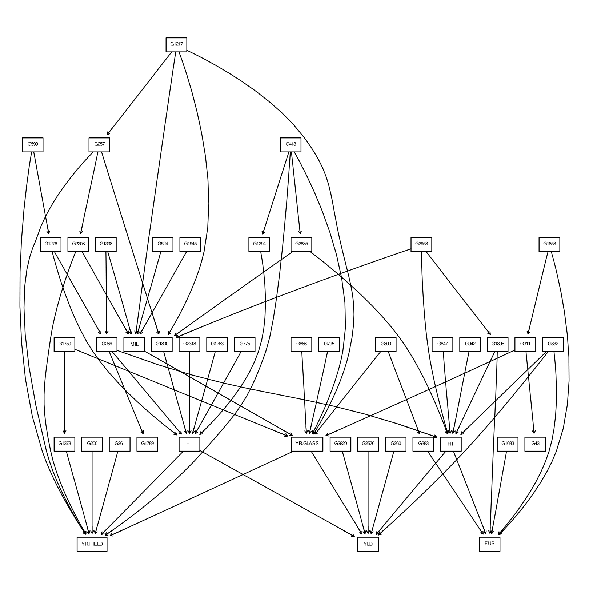
Andes 네트워크는 노드 223개, 평균 차수 3.03이며 이진 데이터로 매개변수화되어 있습니다.
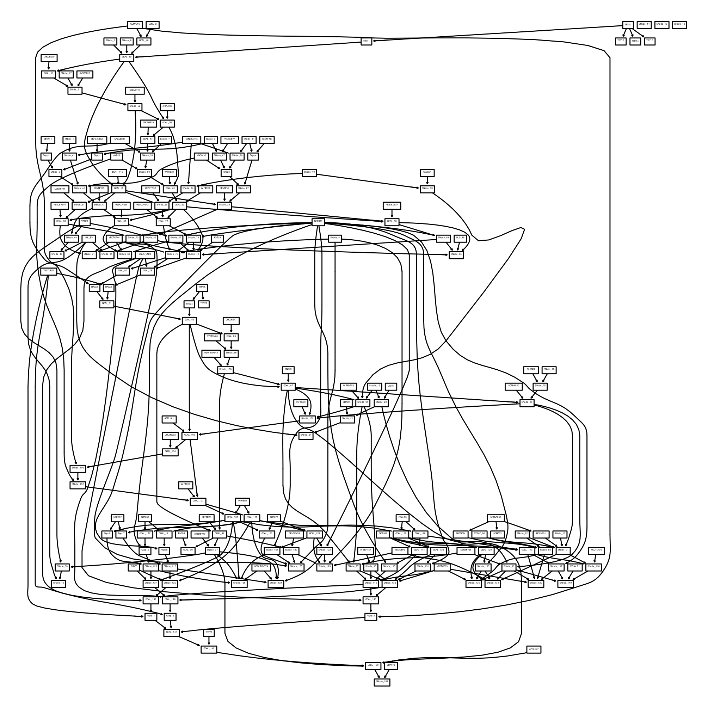
G. 확장 결과 (Extended Results)
Fig. 1의 주 결과는 곡선이 여럿 겹쳐 보이므로, 부록 G는 같은 결과를 표로 명시합니다. Tab. 2는 d-분리, Tab. 3은 Fisher-Z, Tab. 4는 KCI, Tab. 5는 \(G^2\) 검정 결과입니다. 표에는 Fig. 1에 없는 계산 시간도 함께 보고됩니다.
- d-분리 설정에서는 계산 시간이 CI 검정 횟수와 같은 경향을 보입니다.
- Fisher-Z 또는 \(G^2\)를 쓰면 MARVEL의 계산 시간이 크게 증가하고, 국소 방법(MB-by-MB, LDECC, LDP)과 PC · SNAP(\(\infty\)) 사이의 격차가 노드 수 증가에 따라 좁아집니다.
- LOAD는 노드 수가 적을 때 예상대로 국소와 전역 사이에 위치하지만, 극단적으로 큰 그래프에서는 전역 방법보다 느려집니다. MARVEL · MB-by-MB\(^{+}\) · LDECC\(^{+}\) · LOAD가 모두 어떤 형태로든 마르코프 블랭킷 탐색을 사용하는데, 이 탐색은 일반적으로 조건화 집합 크기가 큰 CI 검정을 수행해 계산량이 많기 때문입니다.
아래는 각 설정에서 가장 큰 그래프(\(n_V = 1000\), KCI는 \(n_V = 20\))의 값만 발췌한 것입니다. 노드 수별 전체 수치는 원문 §G의 Tab. 2–5에 있습니다.
| 방법 | d-분리 CI \(\times 10^3\) |
d-분리 F1 |
d-분리 개입 거리 |
Fisher-Z CI \(\times 10^3\) |
Fisher-Z F1 |
Fisher-Z 개입 거리 |
|---|---|---|---|---|---|---|
| PC | 542.52 ± 6.66 | 1.00 ± 0.00 | 0.003 ± 0.003 | 555.47 ± 4.69 | 0.66 ± 0.43 | 0.131 ± 0.290 |
| MB-by-MB\(^{+}\) | 5.64 ± 1.98 | 0.00 ± 0.00 | 0.031 ± 0.030 | 8.20 ± 3.00 | 0.00 ± 0.00 | 0.113 ± 0.114 |
| LDECC\(^{+}\) | 566.69 ± 508.87 | 0.00 ± 0.00 | 0.031 ± 0.030 | — | — | — |
| LDP\(^{+}\) | 7.45 ± 2.06 | 0.00 ± 0.00 | 0.010 ± 0.010 | 10.23 ± 3.02 | 0.00 ± 0.00 | 0.041 ± 0.042 |
| SNAP(\(\infty\)) | 499.67 ± 0.15 | 1.00 ± 0.00 | 0.003 ± 0.003 | 499.50 ± 0.00 | 0.00 ± 0.00 | 0.586 ± 0.321 |
| LOAD | 7.63 ± 2.47 | 1.00 ± 0.00 | 0.003 ± 0.003 | 11.15 ± 3.37 | 0.96 ± 0.13 | 0.005 ± 0.005 |
| 방법 | KCI (\(n_V = 20\)) CI 검정 |
KCI F1 |
KCI 개입 거리 |
\(G^2\) (\(n_V = 1000\)) CI \(\times 10^3\) |
\(G^2\) F1 |
\(G^2\) 개입 거리 |
|---|---|---|---|---|---|---|
| PC | 454.97 ± 86.31 | 0.52 ± 0.47 | 0.37 ± 0.47 | 539.23 ± 1.48 | 0.19 ± 0.34 | 0.021 ± 0.037 |
| MB-by-MB\(^{+}\) | 211.46 ± 92.08 | 0.00 ± 0.00 | 0.18 ± 0.31 | 4.71 ± 1.04 | 0.00 ± 0.00 | 0.035 ± 0.052 |
| MARVEL | 322.07 ± 62.74 | 0.55 ± 0.48 | 0.27 ± 0.42 | — | — | — |
| LDECC\(^{+}\) | 384.71 ± 220.95 | 0.02 ± 0.11 | 0.29 ± 0.45 | — | — | — |
| LDP\(^{+}\) | 258.59 ± 94.33 | 0.11 ± 0.31 | 0.16 ± 0.30 | 6.23 ± 1.21 | 0.00 ± 0.00 | 0.036 ± 0.053 |
| SNAP(\(\infty\)) | 242.79 ± 53.92 | 0.40 ± 0.46 | 0.38 ± 0.42 | 499.50 ± 0.00 | 0.00 ± 0.00 | 0.054 ± 0.046 |
| LOAD | 239.56 ± 93.61 | 0.75 ± 0.41 | 0.13 ± 0.29 | 6.10 ± 1.47 | 0.06 ± 0.17 | 0.036 ± 0.052 |
Fisher-Z 열에서 눈에 띄는 것은 SNAP(\(\infty\))의 F1이 \(n_V = 1000\)에서 0.00까지 떨어지고 개입 거리는 0.586으로 가장 나쁘다는 사실입니다(원문 Tab. 3 기준, \(n_V = 100\)에서는 0.56에서 시작해 노드 수와 함께 단조 감소). LOAD가 같은 설정에서 0.96을 유지하는 것과 대비됩니다. 즉 “전역 방법이면 최적 조정집합을 얻는다”는 명제는 오라클 CI 검정 아래에서만 성립하며, 유한 표본에서는 전역 학습이 축적하는 검정 오류가 오히려 국소 방법보다 불리하게 작용할 수 있습니다. 이 관찰이 LOAD의 실전 가치를 뒷받침하는 가장 강한 실험적 근거입니다.
H. 절제 실험 (Ablations)
H.1 CI 검정 오류
Fig. 1과 §G의 결과는 이진 데이터 설정에서 최적 조정집합 식별이 훨씬 어렵다는 것을 모든 알고리즘에 대해 일관되게 보여 줍니다. 원인은 검정 방식의 차이에 있습니다.
- Fisher-Z 검정은 표본 공분산 행렬의 역행렬로부터 편상관(partial correlation)을 손쉽게 계산할 수 있습니다.
- \(G^2\) 검정 같은 이산 데이터용 검정은 그럴 수 없고, 조건화 집합의 모든 변수 값 조합에 대한 관측 빈도(counts)를 검정마다 사용해야 하므로 표본 복잡도가 훨씬 높습니다. 직관적으로 조건화 집합이 커질수록 각 조합에 해당하는 표본 수가 줄어들어 결과가 부정확해집니다.
이를 경험적으로 확인하기 위해 Fig. 1과 같은 설정에서 노드 수 100 · 200 · 400에 대해 오류가 난 CI 검정의 비율을 측정했습니다.
H.2 국소 이웃의 오류
LOAD의 성능은 국소 인과 발견 하위 절차가 추정한 국소 이웃의 구조적 오류가 늘수록 완만하게 나빠집니다. 오류는 추정된 부모 · 자식 · 무향 이웃 집합과 참 집합의 대칭차(symmetric difference)의 크기로 측정하며, \(n_V = 200\), \(d = 2\), \(d_{\max} = 10\)에서 표본 수를 바꿔 가며 Fisher-Z(선형 가우시안)와 \(G^2\)(이진) 모두에 대해 평가했습니다.
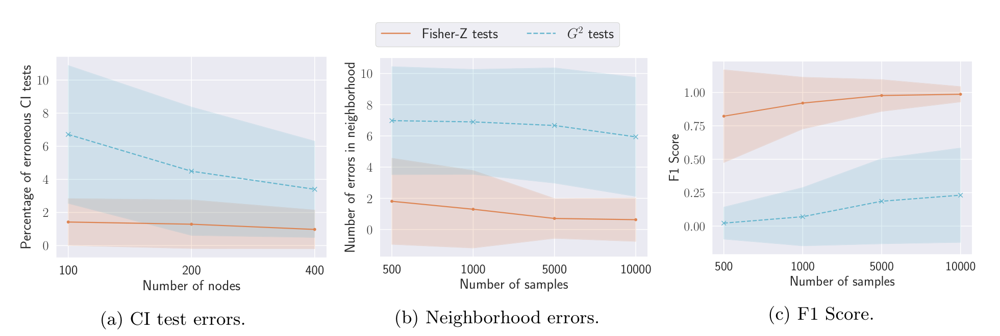
예상대로 국소 이웃의 오류가 적을수록 최적 조정집합 복원이 좋아집니다(Fig. 7c).
H.3 단계별 성능
LOAD의 각 단계별 성능을 살펴봅니다. 일반적으로 앞 두 단계의 정확성이 뒤 단계에 결정적입니다. Step 1에서 목표 간 인과 관계를 잘못 판정하거나 Step 2에서 식별 가능성을 잘못 판정하면 알고리즘 전체의 흐름이 바뀌기 때문입니다. Step 3과 4는 함께 매개변수를 식별하므로 올바른 최적 조정집합을 얻는 데 결정적입니다. 반면 마지막 두 단계는 인과효과 추정의 정확도 관점에서는 덜 치명적입니다 — 원리적으로 출력이 여전히 유효한 집합일 수 있고, 그렇다면 추정은 분산만 커질 뿐 불편(unbiased)하기 때문입니다.
LOAD가 인과 관계나 식별 가능성을 틀리면 이후 단계의 정밀도와 재현율은 자동으로 0이 됩니다.
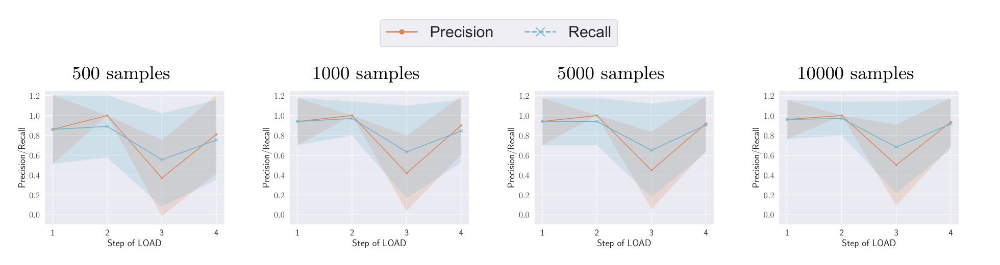
- Step 3이 LOAD의 가장 큰 난제입니다. 다만 이는 LOAD가 인과 관계나 효과 식별 가능성을 잘못 판정해서가 아닙니다. Step 1과 2의 정밀도 · 재현율은 높습니다.
- 실제로 Step 2는 모든 표본 수에서 완벽한 정밀도를 달성합니다. 즉 식별 불가능한 효과를 식별 가능하다고 예측하는 일이 결코 없습니다. Step 2의 높은 재현율과 함께 보면, Alg. 2가 표본 수에 걸쳐 견고하게 식별 가능성을 판정함을 알 수 있습니다.
- Step 4의 정밀도와 재현율도 높습니다. 이는 불완전한 금지 사영 아래에서도 국소 인과 발견으로 복원한 결과의 부모가 최적 조정집합을 성공적으로 되살릴 수 있음을 시사합니다.
H.4 대안적 국소 인과 발견 알고리즘
LOAD(Alg. 3)의 국소 인과 발견 하위 절차인 MB-by-MB를 CMB(Gao and Ji, 2015)로 교체해 비교합니다(구현은 Yu et al., 2020).
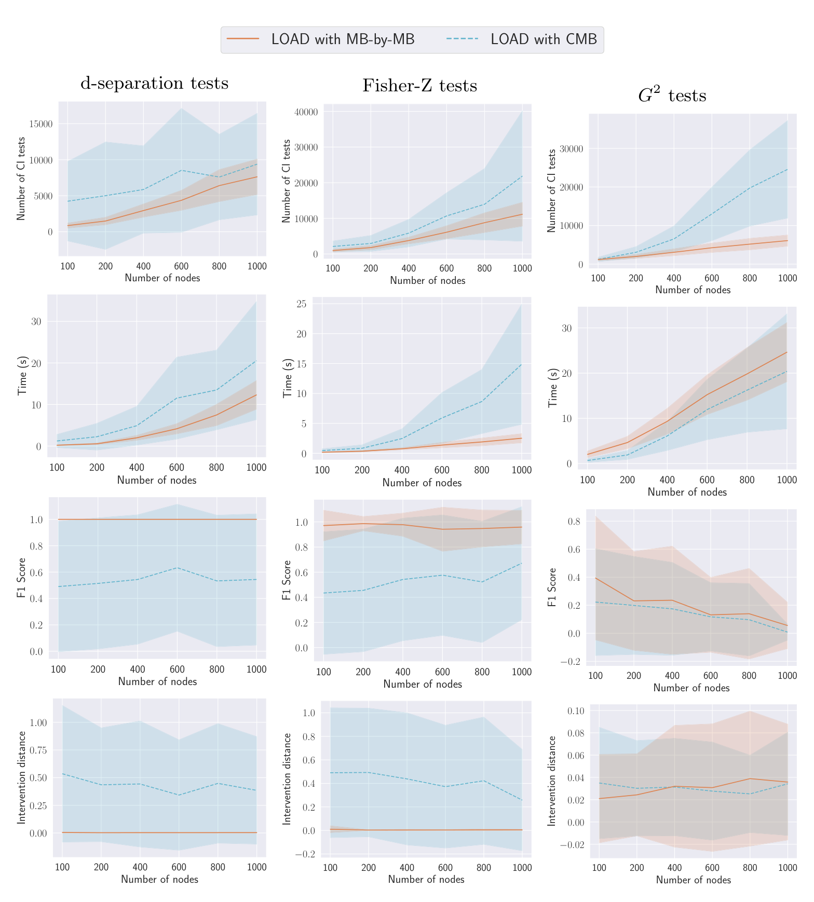
MB-by-MB를 쓴 LOAD는 d-분리와 Fisher-Z에서 시간이 더 적게 들고, 모든 데이터 설정에서 CI 검정을 더 적게 수행합니다. CMB는 이진 데이터에서는 비슷하지만, Fisher-Z는 물론 d-분리 CI 검정에서도 훨씬 나쁜 F1과 개입 거리를 보입니다. 오라클 검정에서 이런 일이 일어나서는 안 되므로(CMB도 MB-by-MB처럼 건전하고 완전해야 합니다), 저자들은 CMB 구현에 버그가 있을 가능성을 제기합니다.
H.5 대안적 마르코프 블랭킷 발견 알고리즘
Fig. 1의 주 결과에서 LOAD는 MB-by-MB를 쓰고, MB-by-MB는 다시 Grow-Shrink로 마르코프 블랭킷을 찾습니다. 이 부분을 교체해 봅니다.
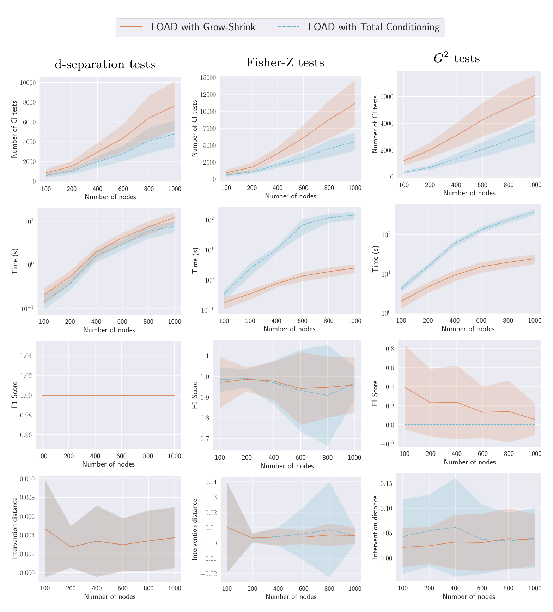
Total Conditioning(Pellet and Elisseeff, 2008b)으로 바꾸면 CI 검정은 더 적게 수행하고 개입 거리는 비슷하지만, 유한 데이터 설정에서 계산 시간이 훨씬 많이 듭니다. 나아가 이진 데이터에서는 최적 조정집합의 노드를 하나도 올바르게 식별하지 못합니다.
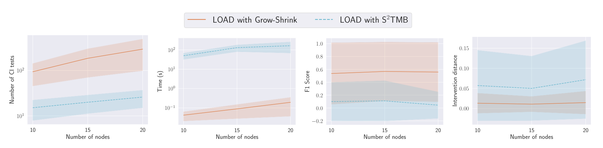
S\(^2\)TMB(Gao and Ji, 2017; 구현은 Yu et al., 2020)는 이산 데이터만 다룰 수 있어 노드 10 · 15 · 20의 이진 데이터로 비교했습니다. CI 검정은 Grow-Shrink보다 적게 수행하지만 시간이 훨씬 오래 걸리고, 모든 그래프 크기에서 F1과 개입 거리가 더 나쁩니다.
H.6 처치–결과 관계를 배경 지식으로 제공하는 경우
MB-by-MB · LDECC · LDP 등 문헌의 대부분의 국소 인과 발견 알고리즘은 처치–결과 관계를 안다고 가정합니다. 이 절의 실험은 그 요구에 맞추어 원래 버전들을 배경 지식과 함께 실행합니다. 또한 이 정보를 활용할 수 있는 LOAD의 변형 LOAD\(^{*}\)를 도입하는데, 이는 조상 관계를 판정하는 Step 1을 그냥 건너뛰는 것입니다. PC · MARVEL · SNAP 같은 전역 알고리즘은 변경 없이 그대로 둡니다. 나머지 설정은 본문과 동일합니다(\(n_D = 10000\), \(d = 2\), \(d_{\max} = 10\), \(\alpha = 0.01\)).
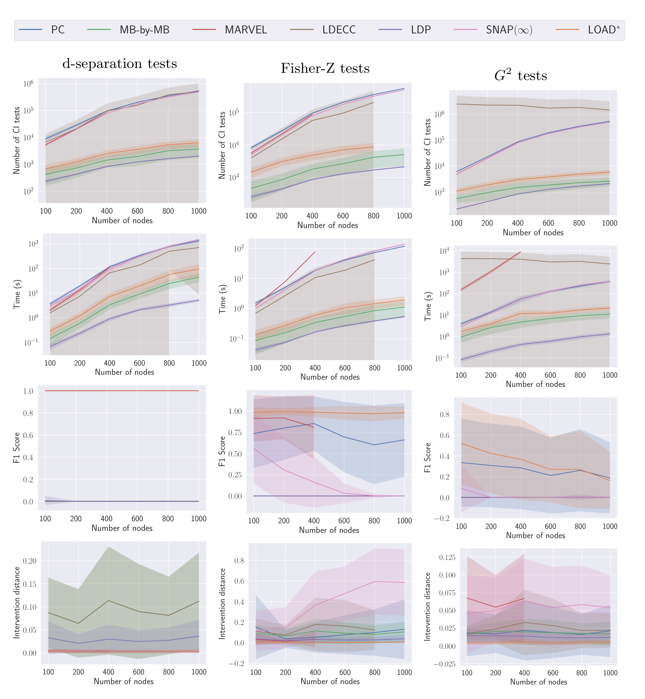
- LDECC가 두 목표가 아니라 제공된 처치에 대해서만 한 번 실행하면 되므로, \(G^2\) CI 검정을 쓰는 이진 데이터에서도 평가가 가능해졌습니다.
- CI 검정 횟수 · 시간 · 개입 거리는 배경 지식이 없는 경우와 유사합니다. 모든 방법에서 검정 횟수와 계산 시간이 변수 수에 따라 꾸준히 증가하는데, 예외는 이진 데이터의 LDECC로 오히려 감소합니다. d-분리나 선형 가우시안 Fisher-Z에서는, 그리고 다른 어떤 방법에서도 이런 일이 없으므로 저자들은 LDECC가 수행하는 CI 검정의 오류 때문이라고 추정합니다.
- 일반적으로 처치–결과 관계가 알려지면 LDP가 CI 검정과 계산 시간 모두에서 가장 저렴합니다.
- 이진 데이터에서 100–400 노드 구간에서 LOAD\(^{*}\)가 추정 Oset의 F1 점수로 PC를 능가하며, 전체 노드 수에 걸쳐 비슷한 수준을 유지합니다.
H.7 식별 가능한 인과효과만 표집한 경우
한쪽이 다른 쪽의 명시적 조상이 되도록 목표 쌍을 표집하면 인과효과가 식별 불가능한 경우가 자주 생겨 LOAD가 Step 2 이후 조기 종료합니다. LOAD가 모든 단계를 실행하는 시나리오를 평가하기 위해, 인과효과가 식별 가능함을 보장한 목표 쌍으로 모든 알고리즘을 평가합니다.
이 설정에서는 노드 수를 \([100, 200, 300, 400, 500]\)으로만 실험했습니다. 더 큰 그래프에서는 데이터 생성 자체에 시간과 메모리 문제가 생기기 때문입니다. 병렬화 없이 500 노드의 시드 하나가 약 1시간 15분이 걸리고 100개 시드를 평균해야 하는데, 노드가 더 커지면 데이터셋 크기 때문에 병렬화도 어려워집니다.
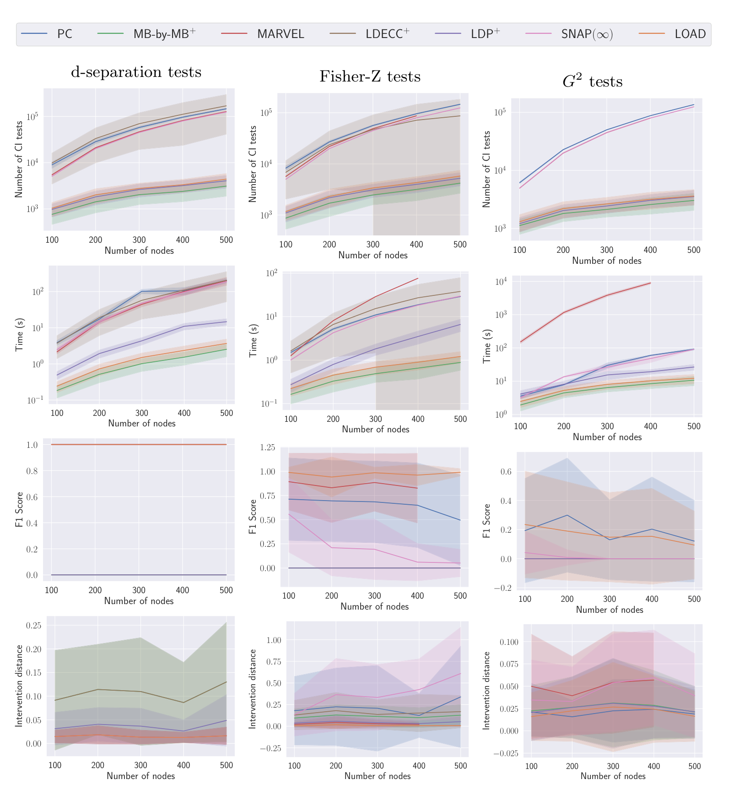
Fig. 1의 주 결과와 마찬가지로 LOAD의 CI 검정 횟수는 국소 방법과 비슷하고 계산 시간은 LDP보다도 좋습니다. 최적 조정집합 복원의 F1과 개입 거리는 모든 설정에서 최상위권인 반면, 다른 기준선들은 어느 한 설정에서는 둘 중 하나가 뒤처집니다.
H.8 다양한 표본 수
노드 수를 \(n_V = 200\)으로 고정하고 표본 수를 \(n_D \in [500, 1000, 5000, 10000]\)으로 바꿉니다. 나머지는 \(d = 2\), \(d_{\max} = 10\), \(\alpha = 0.01\)로 유지합니다. 오라클 d-분리 검정은 표본 수의 영향을 받지 않으므로 Fisher-Z와 \(G^2\)의 유한 데이터 경우만 평가합니다.
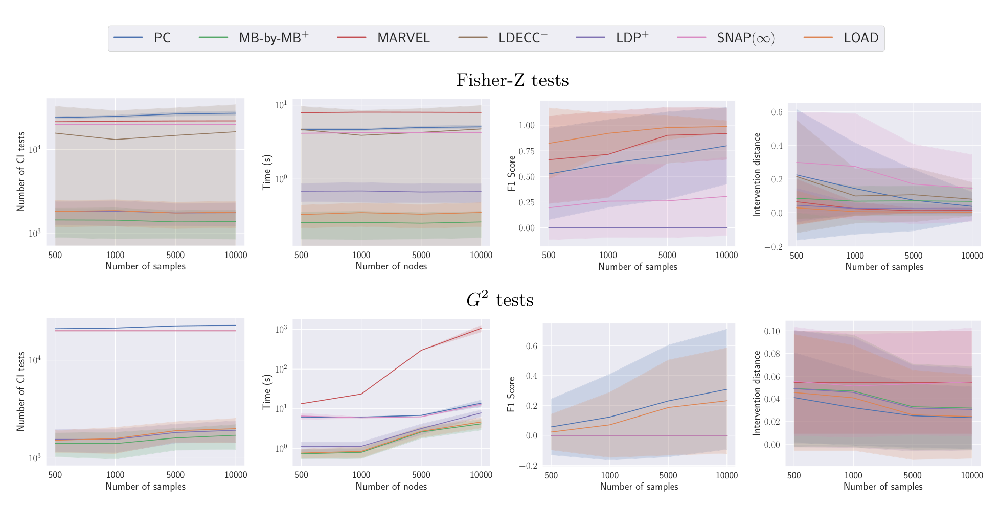
- 표본 수는 Fisher-Z의 CI 검정 횟수와 계산 시간에 영향을 주지 않습니다.
- \(G^2\)에서는 LOAD와 다른 국소 방법의 CI 검정 횟수와 계산 시간이 약간 증가하고, MARVEL의 계산 시간은 급격히 증가합니다.
- 표본이 많아지면 두 데이터 유형 모두에서 더 좋은 조정집합을 복원하며, LOAD는 모든 표본 수에서 최상의 F1과 개입 거리 중 하나를 달성합니다.
H.9 다양한 기대 차수
기대 차수를 \(d \in [2.0, 2.5, 3.0]\)으로 바꾸고 \(n_V = 200\), \(d_{\max} = 10\), \(n_D = 10000\), \(\alpha = 0.01\)로 고정합니다.
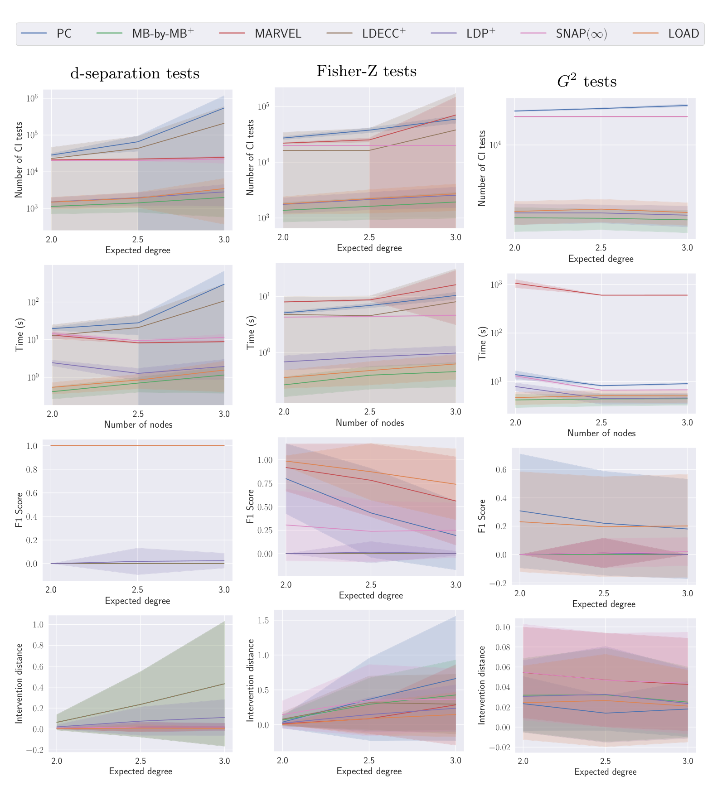
기대 차수를 늘리면 모든 알고리즘에게 문제가 훨씬 어려워집니다. 계산 요구량이 전반적으로 증가하고 복원된 조정집합의 품질은 나빠집니다. 그럼에도 LOAD의 계산 요구량은 국소 방법에 가깝게 유지되면서, 데이터 유형 전반에 걸쳐 최상의 F1과 개입 거리 중 하나를 계속 달성합니다.
정리하며 (Closing Remarks)
이 논문의 논증 사슬을 한 장으로 압축하면 다음과 같습니다.
| 단계 | 내용 | 근거 |
|---|---|---|
| ① 방향 판정의 국소화 | 처치–결과 관계를 모르는 상태에서, 명시적 · 가능한 · 확정적 비-조상 관계를 국소 CI 검정만으로 판정한다 | Thm. 4.1–4.2 (Fang et al.), Alg. 1, Lemma 4.1 |
| ② 식별 가능성의 필요조건 | 가능한 조상이지만 명시적 조상이 아니면 효과는 식별 불가능하다 | Lemma 4.2 (§D.3) |
| ③ 순응성의 국소 검정 | 모든 가능 유향 경로를 훑는 대신 처치의 형제들만 검사하면 순응성을 필요충분하게 판정할 수 있다 | Lemma 4.3, Lemma D.4, Alg. 2 |
| ④ 식별 판정의 완결 | ②와 ③을 합치면 식별 가능성 판정이 건전하고 완전해진다 | Cor. 4.1 (§D.5) |
| ⑤ 사영의 교체 | \(\mathrm{Forb}\) 대신 \(\mathrm{PossDe}(T)\)로 사영해도 결과의 부모 집합은 불변이며, 그래프는 더 작고 국소적으로 계산 가능하다 | Lemma 4.4 (§D.6) |
| ⑥ 최적성의 완결 | 변형 사영 위에서 결과의 부모를 국소 발견으로 읽으면 최적 조정집합을 얻는다 | Thm. 4.3 (§D.7) |
| ⑦ 비용의 지수 축소 | 지수 자리의 밑이 \(\lvert\mathbf{V}\rvert\)에서 \(\lvert\mathrm{MB}_{\max}\rvert\)로 바뀐다 | §4.3 복잡도 분석 |
| ⑧ 실증 | 합성 · KCI · 준합성 전반에서 국소 수준의 비용 + 전역 수준(또는 그 이상)의 F1 · 개입 거리 | §5, Fig. 1, Tab. 1 |
| ⑨ 부수적 기여 | LocalPC의 비건전성, LDECC의 불완전성, LDP의 오보를 실행 가능한 반례와 함께 지적하고 수정안을 제시 | §A.1–A.3 |
개인적인 감상 몇 가지를 덧붙입니다.
- 가장 인상적인 지점은 단연 Lemma 4.4의 사영 교체입니다. 원래의 금지 사영은 \(\mathrm{Forb}_G(T, O)\)를 계산해야 하고, 그러려면 \(T\)에서 \(O\)로 가는 가능 유향 경로 위의 노드를 알아야 하며, 그건 사실상 전역 정보입니다. 여기서 저자들은 더 큰 집합인 \(\mathrm{PossDe}_G(T)\)로 통째로 갈아치웁니다. 보통 “더 많이 지우면 정보를 잃는다”고 생각하기 쉬운데, 지워지는 초과분 \(\Delta\)가 전부 결과와 그 조상들의 확정적 비-조상이라는 사실 덕분에 최적 조정집합은 그대로 남습니다. 더 크고, 더 싸고, 더 국소적인 집합으로 바꿨는데 답이 안 변한다 — 이 논문의 기술적 핵심이 이 한 줄에 있습니다.
- Lemma 4.3의 “형제만 보면 된다”도 같은 결의 통찰입니다. 순응성은 정의상 경로 전체에 대한 전역 조건인데, 그 위반이 반드시 \(X\)에 인접한 무향 엣지에서 시작한다는 점을 이용해 국소 조건으로 정확히 환원됩니다. Alg. 2가 세 줄짜리 함수인데 그것이 필요충분조건이라는 사실은 다시 봐도 놀랍습니다.
- 부록 A를 본문만큼 진지하게 읽을 가치가 있습니다. LocalPC가 건전하지 않다는 지적은 LDECC · MMB-by-MMB · LocICR을 한꺼번에 겨냥하며, 무엇보다 실행하면 실제로 assertion이 깨지는 코드를 함께 제시합니다. 이론 논문이 관행적으로 회피하는 종류의 작업이고, 세 알고리즘의 공개 구현을 직접 돌려 반례를 재현해 놓은 태도는 분야 전체에 대한 기여입니다. 수정 방법도 “3행과 5행의 \(\mathrm{Adj}(X)\)를 \(\mathrm{MB}(X)\)로 바꿔라”라는 한 줄짜리 처방이어서 그대로 적용할 수 있습니다.
- 실험에서 가장 시사적인 수치는 Fisher-Z 설정에서 SNAP(\(\infty\))의 F1이 노드 수에 따라 0.56 → 0.00으로 단조 붕괴하는 반면 LOAD는 0.97 → 0.96을 유지하는 대목입니다(§G). SNAP은 이 논문 저자들 자신의 직전 연구인데, 그 한계를 감추지 않고 정면으로 드러냈습니다. 동시에 이 수치는 “전역이면 최적”이라는 통념이 오라클 CI 검정 아래에서만 유효하다는 것을 말해 줍니다. 유한 표본에서는 더 적게 검정하는 쪽이 오히려 더 정확할 수 있습니다.
- 실용적 한계도 정직하게 남아 있습니다. 첫째, 이진 데이터 + \(G^2\) 검정에서는 모든 방법이 무너지고, 1000 노드에서 LOAD의 F1은 0.06까지 떨어집니다(PC 0.19). §H.1이 설명하듯 이산 CI 검정의 표본 복잡도가 근본 원인이며, 국소성으로 해결되는 문제가 아닙니다. 둘째, §G가 인정하듯 극단적으로 큰 그래프에서는 LOAD가 전역 방법보다 느려질 수 있습니다 — 마르코프 블랭킷 탐색이 조건화 집합이 큰 CI 검정을 요구하기 때문입니다. 결국 \(\lvert\mathrm{MB}_{\max}\rvert\)가 커지는 순간 국소성의 이점은 희석됩니다. 셋째, 모든 이론적 보증은 인과충분성에 의존하며, 저자들도 그 해제를 향후 과제로 남겨 두었습니다. 잠재 교란이 있으면 유일한 최적 조정집합 자체가 존재하지 않으므로(Smucler et al., 2022), 이는 단순한 확장이 아니라 기준을 새로 정의해야 하는 문제입니다.
- Step 3이 병목이라는 §H.3의 관찰도 곱씹을 만합니다. 정밀도 · 재현율 곡선이 Step 3에서만 골짜기를 만드는데, 이 단계는 모든 변수에 대해 “처치의 가능한 후손인가”를 묻는 유일한 전역 순회 단계입니다. 즉 LOAD 안에서 가장 국소적이지 않은 부분이 가장 취약한 부분이라는 뜻이며, 개선의 여지가 어디에 있는지를 그림 하나가 정확히 가리키고 있습니다.
주요 참고문헌 (Selected References)
- Andersson, S. A., Madigan, D., & Perlman, M. D. (1997). A characterization of Markov equivalence classes for acyclic digraphs. The Annals of Statistics, 25(2), 505–541. (CPDAG의 특성화, Thm. D.2)
- Fang, Z., Liu, Y., Geng, Z., Zhu, S., & He, Y. (2022). A local method for identifying causal relations under Markov equivalence. Artificial Intelligence, 305, 103669. (Thm. 4.1–4.2, 조상 관계의 국소 검정)
- Gao, T., & Ji, Q. (2015). Local causal discovery of direct causes and effects. NeurIPS, 28. (CMB, §H.4의 대안 하위 절차)
- Gao, T., & Ji, Q. (2017). Efficient score-based Markov blanket discovery. International Journal of Approximate Reasoning, 80, 277–293. (S\(^2\)TMB, §H.5)
- Gradu, P., Zrnic, T., Wang, Y., & Jordan, M. (2022). Valid inference after causal discovery. NeurIPS 2022 Workshop on Causality for Real-world Impact. (이중 사용 회피를 위한 표본 분리)
- Gupta, S., Childers, D., & Lipton, Z. C. (2023). Local causal discovery for estimating causal effects. CLeaR, 408–447. (LDECC, §A.1–A.2의 반례 대상)
- Henckel, L., Perković, E., & Maathuis, M. H. (2022). Graphical criteria for efficient total effect estimation via adjustment in causal linear models. JRSS-B, 84(2), 579–599. (최적 조정집합의 정의와 Thm. 3.13)
- Maasch, J. R. M. A., Pan, W., Gupta, S., Kuleshov, V., Gan, K., & Wang, F. (2024). Local discovery by partitioning: Polynomial-time causal discovery around exposure-outcome pairs. UAI. (LDP, §A.3의 반례 대상)
- Maathuis, M. H., & Colombo, D. (2015). A generalized back-door criterion. The Annals of Statistics, 43(3), 1060–1088. (Cor. D.1, §D.4 Case 1b의 핵심)
- Maathuis, M. H., Kalisch, M., & Bühlmann, P. (2009). Estimating high-dimensional intervention effects from observational data. The Annals of Statistics, 37(6A), 3133–3164. (IDA, 국소 유효 부모 조정집합과 Alg. 10)
- Margaritis, D., & Thrun, S. (1999). Bayesian network induction via local neighborhoods. NeurIPS, 12. (Grow-Shrink 마르코프 블랭킷 발견)
- Meek, C. (1995). Causal inference and causal explanation with background knowledge. UAI, 403–410. (Meek 방향 결정 규칙, §D.6)
- Mokhtarian, E., Akbari, S., Ghassami, A., & Kiyavash, N. (2021). A recursive Markov boundary-based approach to causal structure learning. KDD’21 Workshop on Causal Discovery, 26–54. (MARVEL)
- Pearl, J. (2009). Causality. Cambridge University Press.
- Pellet, J.-P., & Elisseeff, A. (2008b). Using Markov blankets for causal structure learning. JMLR, 9(7). (Total Conditioning, §H.5)
- Perkovic, E. (2020). Identifying causal effects in maximally oriented partially directed acyclic graphs. UAI, 530–539. (순응성이 식별 가능성의 필요충분조건임)
- Perković, E., Textor, J., Kalisch, M., & Maathuis, M. H. (2015). A complete generalized adjustment criterion. UAI, 682–691. (순응성의 정의, Def. 2.1)
- Perković, E., Textor, J., Kalisch, M., & Maathuis, M. H. (2018). Complete graphical characterization and construction of adjustment sets in Markov equivalence classes of ancestral graphs. JMLR, 18(220), 1–62. (금지 노드 \(\mathrm{Forb}\))
- Rotnitzky, A., & Smucler, E. (2020). Efficient adjustment sets for population average causal treatment effect estimation in graphical models. JMLR, 21(188), 1–86. (최적 조정집합)
- Roumpelaki, A., Borboudakis, G., Triantafillou, S., & Tsamardinos, I. (2016). Marginal causal consistency in constraint-based causal learning. Causation: Foundation to Application Workshop, UAI. (확정적 조상 ≠ CPDAG의 유향 경로)
- Schubert, M., Claassen, T., & Magliacane, S. (2025). SNAP: Sequential non-ancestor pruning for targeted causal effect estimation with an unknown graph. AISTATS, PMLR 258, 3340–3348. (SNAP, 개입 거리 지표의 출처)
- Scutari, M. (2010). Learning Bayesian networks with the bnlearn R package. Journal of Statistical Software, 35(3), 1–22. (MAGIC-NIAB, ANDES 네트워크)
- Smucler, E., Sapienza, F., & Rotnitzky, A. (2022). Efficient adjustment sets in causal graphical models with hidden variables. Biometrika, 109(1), 49–65. (잠재변수 하에서 유일한 최적 조정집합이 없음 — 향후 과제의 근거)
- Spirtes, P., Glymour, C. N., & Scheines, R. (2000). Causation, Prediction, and Search. MIT Press. (PC, Lemma A.1)
- Tsamardinos, I., Aliferis, C. F., & Statnikov, A. R. (2003). Algorithms for large scale Markov blanket discovery. FLAIRS, 2, 376–381. (마르코프 블랭킷 발견의 복잡도)
- Wang, C., Zhou, Y., Zhao, Q., & Geng, Z. (2014). Discovering and orienting the edges connected to a target variable in a DAG via a sequential local learning approach. Computational Statistics & Data Analysis, 77, 252–266. (MB-by-MB, Thm. D.1)
- Watson, D. S., & Silva, R. (2022). Causal discovery under a confounder blanket. UAI, 2096–2106. (CBL)
- Witte, J., Henckel, L., Maathuis, M. H., & Didelez, V. (2020). On efficient adjustment in causal graphs. JMLR, 21(246), 1–45. (금지 사영과 Def. 2.2–2.3, 이 논문의 출발점)
- Zhang, J. (2008). On the completeness of orientation rules for causal discovery in the presence of latent confounders and selection bias. Artificial Intelligence, 172(16), 1873–1896. (Lemma D.1)
- Zhang, K., Peters, J., Janzing, D., & Schölkopf, B. (2011). Kernel-based conditional independence test and application in causal discovery. UAI, 804–813. (KCI 검정)